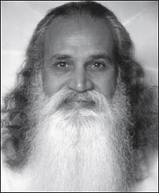
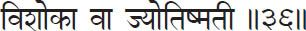

Book One
Samādhi Pāda
Portion on Contemplation

This begins our study of Rāja Yoga, or Aṣṭāṅga (eight-limbed) Yoga as it is sometimes called. The Yoga Sūtras as expounded by the sage Patañjali Maharishi comprise the first and foremost scripture of Yoga. It was Patañjali who carefully coordinated Yogic thought and explained it to his students. As he expounded these thoughts, his students jotted them down in a sort of shorthand using just a few words which came to be called the sūtras. The literal meaning of the word “sūtra” is “thread;” and these sūtras are just combinations of words threaded together—usually not even well-formed sentences with subjects, predicates and so on. Within the space of these two hundred short sūtras, the entire science of Yoga is clearly delineated: its aim, the necessary practices, the obstacles you may meet along the path, their removal, and precise descriptions of the results that will be obtained from such practices.
1. Atha Yogānuśāsanam.
Atha = now; Yoga = Yoga;
anuśāsanam = exposition or instruction.
Now the exposition of Yoga is being made.
Anuśāsanam means exposition or instruction because it is not mere philosophy that Patañjali is about to expound but rather direct instruction on how to practice Yoga. Mere philosophy will not satisfy us. We cannot reach the goal by mere words alone. Without practice, nothing can be achieved.
2. Yogaś citta vṛtti nirodhaḥ.
Yogaḥ (Yogaś) = Yoga (is); citta = of the mind-stuff, mind field;
vṛtti = modifications; nirodhaḥ = restraint.
The restraint of the modifications of the mind-stuff is Yoga.
In this sūtra, Patañjali gives the goal of Yoga. For a keen student, this one sūtra would be enough because the rest of them only explain this one. If the restraint of the mental modifications is achieved, one has reached the goal of Yoga. The entire science of Yoga is based on this. Patañjali has given the definition of Yoga and at the same time the practice. “If you can control the rising of the mind into ripples, you will experience Yoga.”
Now we will discuss the meaning of each word of the sūtra. Normally, the word Yoga is translated as “union,” but for a union there should be two things to unite. In this case, what is to unite with what? So here we take Yoga to mean the Yogic experience. The extraordinary experience gained by controlling the modifications of the mind is itself called Yoga.
Citta is the sum total of mind. To have a full picture of what Patañjali means by “mind,” you should know that within the citta are different levels. The basic mind is called ahaṁkära, or the ego, the “I” feeling. This gives rise to the intellect or discriminative faculty which is called buddhi. Another stage is called manas, the desiring part of the mind, which gets attracted to outside things through the senses.
For example, say you are quietly sitting enjoying the solitude when a nice smell comes from the kitchen. The moment the manas records, “I’m getting a fine smell from somewhere,” the buddhi discriminates, “What is that smell? I think it’s cheese. How nice. What kind? Swiss? Yes, it’s Swiss cheese.” Then, once the buddhi decides, “Yes, it’s a nice piece of Swiss cheese like you enjoyed in Switzerland last year,” the ahaṁkära says, “Oh, is it so? Then I should have some now.” These three things happen one at a time, but so quickly that we seldom distinguish between them.
These modifications give rise to the effort to get the cheese. The want was created and, unless you fulfill it by peeping into the kitchen and eating the cheese, your mind won’t go back to its original peaceful condition. The want is created, then the effort to fulfill the want, and once you fulfill it, you are back to your original peaceful position. So, normally you are in the peaceful state. That is the natural condition of the mind. But these citta vṛttis, or the modifications of the mind-stuff, disturb that peace.
All the differences in the outside world are the outcome of your mental modifications. For example, imagine you have not seen your father since your birth and he returns when you are ten years old. He knocks at your door. Opening it, you see a strange face. You run to your mama saying, “Mama, there’s a stranger at the door.” Your mama comes and sees her long-lost husband. With all joy she receives him and introduces him as your father. You say, “Oh, my Daddy!” A few minutes before, he was a stranger; now he has become your daddy. Did he change into your daddy? No, he is the same person. You created the idea of “stranger,” then changed it to “Daddy.” That’s all.
The entire outside world is based on your thoughts and mental attitude. The entire world is your own projection. Your values may change within a fraction of a second. Today you may not even want to see the one who was your sweet honey yesterday. If we remember that, we won’t put so much stress on outward things.
That is why Yoga does not bother much about changing the outside world. There is a Sanskrit saying, “Mana eva manuṣyanam karaṇam bandha mokṣayoḥ.” “As the mind, so the person; bondage or liberation are in your own mind.” If you feel bound, you are bound. If you feel liberated, you are liberated. Things outside neither bind nor liberate you; only your attitude toward them does that.
That is why whenever I speak to prison inmates I say, “You all feel you are imprisoned and anxiously wait to get outside these walls. But look at the guards. Are they not like you? They are also within the same walls. Even though they are let out at night, every morning you see them back here. They love to come; you would love to get out. The enclosure is the same. To them it is not a prison; to you it is. Why? Is there any change in the walls? No, you feel it is a prison; they feel that it is a place to work and earn. It is the mental attitude. If, instead of imprisonment, you think of this as a place for your reformation where an opportunity has been given you to change your attitude in life, to reform and purify yourself, you will love to be here until you feel purified. Even if they say, ‘Your time is over; you can go,’ you may say, ‘I am still not purified. I want to be here for some more time.’” In fact, many such prisoners continued to lead a Yogic life even after they left prison, and they were even thankful for their prison life. That means they took it in the right way.
So, if you can have control over the thought forms and change them as you want, you are not bound by the outside world. There’s nothing wrong with the world. You can make it a heaven or a hell according to your approach. That is why the entire Yoga is based on citta vṛtti nirodhaḥ. If you control your mind, you have controlled everything. Then there is nothing in this world to bind you.
3. Tadā draṣṭuḥ svarūpe’vasthānam.
Tadā = then; draṣṭuḥ = the Seer; sva = own;
rūpe = in (Itself) color, in (Itself) nature;
avasthānam (‘vasthānam) = abides.
Then the Seer (Self) abides in Its own nature.
You are that true Seer. You are not the body nor the mind. You are the Knower or Seer. You always see your mind and body acting in front of you. You know that the mind creates thoughts; it distinguishes and desires. The Seer knows that but is not involved in it.
But to understand that eternal peaceful You, the mind must be quiet; otherwise, it seems to distort the truth. If I explain this through an analogy, it will probably be easier to understand. You are the Seer who wants to see Itself. How? Even in the case of your physical face, if I ask if you have ever seen it, you have to say no, because it is the face that sees. The face itself is the seer or the subject. What it sees in the mirror is its image, the seen or the object. If the mirror is corrugated, curved, concave or convex, will you be able to see your true face? No. It will appear to be awful—too big or too high or full of waves. Will you be worried seeing this? No. You will immediately know something is wrong with the mirror. You are seeing a distorted reflection. Only if the mirror is perfectly smooth and clean will it give you the true reflection. Only then can you see your face as it is.
In the same way, the Seer, or true you, reflects in the mind which is your mirror. Normally, you can’t see the true Self because your mind is colored. If the mind is dirty, you say, “I am dirty.” If it’s all polished and shining, “I am beautiful.” That means you think you are your reflection in the mind. If the mind has a lot of waves like the surface of a lake, you will be seeing a distorted reflection. If the water of the mental lake is muddy or colored, you see your Self as muddy or colored. To see the true reflection, see that the water is clean and calm and without any ripples. When the mind ceases to create thought forms or when the citta is completely free from vṛttis, it becomes as clear as a still lake and you see your true Self.
Hearing this analogy, you might turn around and ask me, “Does that mean the Seer misunderstands Itself or has forgotten Itself?” No. The Seer can never misunderstand nor forget Itself. But we are talking on the level of the reflection. The reflection is distorted, so the Seer appears to be distorted. The true you is always the same, but you appear to be distorted or mixed up with the mind. By making the mind clean and pure, you feel you have gone back or you appear to have gone back to your original state.
4. Vṛtti sārūpyam itaratra.
Vṛtti = modification; sārūpyam = assumes form, identification;
itaratra = at other times.
At other times [the Self appears to] assume the forms of the mental modifications.
You seem to have lost your original identity and have identified with your thoughts and body. Suppose I ask you who you are. If you say, “I am a man,” you have identified yourself with a masculine body. If you say, “I am a professor,” you are identifying with the ideas gathered in your brain. If you say, “I am a millionaire,” you are identifying with your bank account; if “a mother,” with a child; “a husband,” with a wife. “I am tall; I am short; I am black or white” shows your identification with the shape and color of the body. But without any identifications, who are you? Have you ever thought about it? When you really understand that, you will see we are all the same. If you detach yourself completely from all the things you have identified yourself with, you realize yourself as the pure “I.” In that pure “I” there is no difference between you and me.
This is true not only with human beings, but with everything. You call something a dog because it has a dog’s body. The spirit in a dog and a human is the same. The same is true even with inanimate objects; there is the same spirit in a stone or a wall. If I use the term “spirit,” or “Self,” you might hesitate to believe me, but if the physicist says the wall is nothing but energy, you will believe that. So, using the scientist’s language, there is nothing but energy everywhere. Even the atom is a form of energy. The same energy appears in different forms to which we also give different names. So the form and name are just different versions of the same energy. And, according to the Yogic scientists such as Patañjali—and even many modern scientists—behind the different forms of energy is one unchanging consciousness or spirit or Self.
That is why, if we could calm our minds and get to the basis of all these modifications, we would find the unity among everything. That is the real Yogic life. That does not mean we are indifferent to the changes and become useless to the world. Instead, with this experience of universal unity, we function better. We will have happy and harmonious lives. Only then can we love our neighbors as our own Self. Otherwise, how is it possible? If I identify myself with my body, I will also see another person as a body and the two bodies cannot be one—they are always different. If I identify myself with my mind, nobody can have a mind exactly like mine. No two individuals have the same body or mind, even twins. Even to the extent of the half-inch-square thumb, we are not the same. Ask the fingerprint experts; they will tell you no two fingerprints are the same.
But behind all these differences, in the Self, we never differ. That means behind all these ever-changing phenomena is a never-changing One. That One appears to change due to our mental modifications. So, by changing your mind, you change everything. If only we could understand this point, we would see that there is nothing wrong outside; it is all in the mind. By correcting our vision, we correct things outside. If we can cure our jaundiced eye, nothing will look yellow. But without correcting the jaundice, however much we scrub the outside things, we are not going to make them white or blue or green; they will always be yellow. That’s why Yoga is based on self-reformation, self-control and self-adjustment. When this reformation is accomplished we will see a new world, a harmonious and happy world. That’s why we should always keep ourselves free from these wrong identifications.
5. Vṛttayaḥ pañcatayyaḥ kliṣṭākliṣṭāḥ.
Vṛttayaḥ = modifications; pañcatayyaḥ = fivefold; kliṣṭa = painful;
akliṣṭāḥ = painless [are].
There are five kinds of mental modifications which are either painful or painless.
Patañjali says there are five kinds of vṛttis, and again these are grouped into two major categories. One variety brings us pain; the other does not. Notice that he does not divide the thoughts into painful and pleasurable. Why? Because even a so-called pleasurable thought might ultimately bring us pain. And, again, we cannot easily know in the beginning whether a particular thought will bring pain or not. Some thoughts begin with pain but end leaving us at peace. Others appear to be pleasurable but bring pain. For example, our pity at another’s suffering certainly causes us pain, but ultimately it expands our hearts and minds, gives us more understanding and leaves us in peace.
Instead of these terms, “painful” and “painless,” we might be able to understand this point better if we use two other words. Call them “selfish” thoughts and “selfless” thoughts. The selfish thoughts ultimately bring pain. For example, to love something or somebody is pleasurable. But many of you have experienced how the very same love brought you a lot of unhappiness, pain, hatred, jealousy and so on. Why? Because that love was not just a pure love but was based on some expectation in return. There was selfishness in it. The expectation may be anything: a little financial comfort, some publicity or a little physical pleasure. With this expectation, love seldom lasts long. So love, though it appears to be a painless thought, ultimately ends in pain if it is based on selfishness.
On the other hand, a thought like anger might bring pain in the beginning. The anger of a selfless person has no personal motive behind it. Although that anger may cause somebody to feel bad in the beginning, ultimately it helps that person to correct himself or herself and to lead a better life. For example, a little strictness on the part of the classroom teacher is needed to reform the children and make them understand their responsibilities. Whatever the thought is, if there is no selfishness behind it, it can never really bring pain to the person concerned. The result is neither pain nor pleasure, but peace. Seeing this truth, we should analyze all our motives and try to cultivate selfless thoughts. That is our first and foremost duty.
Some people say, “I thought that in the name of meditation and Yoga, we were supposed to make the mind blank and without thoughts.” But you can’t make the mind thoughtless immediately. Many people try, but it is impossible. Once you make the mind thoughtless you have attained the goal. But it is not that easy. Many people say,”I have made my mind vacant.” How did they know the mind was vacant? They were aware of it. Is not that type of awareness a thought? You have removed all other thoughts and retained this one thought of having made the mind vacant. That is not the real thoughtlessness.
That is why we use the trick of developing certain positive thoughts while removing negative ones. We say to the mind, “All right. If you want to create some thought forms, go ahead. But if you create thoughts that will bring you pain, you are the one who will suffer. If you are selfish, you will suffer later on. I don’t want to kill you. I am your friend. I am interested in your welfare and peace, so please listen to me: do not create thoughts that will rebound on you. Forget your selfishness, make others happy, and you will be the happiest person.” By seeing others happy, you can’t be unhappy. But by making everybody unhappy, you can never be happy yourself. So, at least for your happiness, bring happiness to others. If you really want to be selfish, be selfish in the idea of retaining your peace. There is no harm in that selfishness because by that you are not going to harm anybody. Instead, you will be bringing the same peace to others also. If the mind says, “I can’t be selfless; I must be selfish,” tell it, “All right. Go to the other extreme and be selfish in refusing to disturb your own peace.”
In our daily lives we always work with these two categories of thoughts. Now we know that selfish thoughts will bring misery and selfless ones leave us in peace. How are we to know whether our thoughts are selfless or not? We have to watch carefully the moment a thoughtform arises in the mind. We become analysts. This itself is Yoga practice—watching our own thoughts and analyzing them.
6. Pramāṇa viparyaya vikalpa nidrā smṛtayaḥ.
Pramāṇa = correct or right knowledge;
viparyaya = misconception, incorrect knowledge;
vikalpa = verbal delusion, imagination; nidrā = sleep;
smṛti = memory; (ayaḥ = plural grouping these five).
They are right knowledge, misconception, verbal delusion, sleep and memory.
Here Patañjali names the five types of vṛttis and explains them one after the other.
7. Pratyakṣānumānāgamāḥ pramāṇāni.
Pratyakṣa = direct perception; ānumāna = inference;
āgamāḥ = scriptural testimony; pramāṇāni = (are) the source of right knowledge; (ani = the three are).
The sources of right knowledge are direct perception, inference and scriptural testimony.
One example of what Patañjali calls valid knowledge is what you understand by seeing something yourself—direct perception. If you see something face-to-face, you don’t have any doubt. That is one way to get valid knowledge. Another is by inference. Seeing smoke, you infer there is fire, because without fire there can’t be smoke. When you see a cow giving milk, you infer that cows give milk. You have not seen them all, but you assume.
And there is one more way. You may not have seen anything personally and may not have anything from which to infer, but a reliable authority, or person who has really understood something, tells you.
Here we normally mean the holy scriptures, which we believe because they are the words of the sages, saints and prophets. They have seen the truth and have expounded upon it, so we believe them. That’s why in the East, if anybody asks you to do some practice, it is expected that the scriptures also recommend it. You should not do something just because I say so. Everybody who has gone the same road should approve it, and the ancient scriptures should also approve it because the truth is the same. It is not something to be newly invented. All our present-day inventions can easily go wrong. What is the best thing today will be the worst thing tomorrow. They are still not finalized. The words of the prophets given through the holy scriptures are finalized. They can’t just be modified.
But even in this, we have to understand the difference between the basic truth and the presentation. Truth can be presented only through some form or vehicle. We should always remember that the truth of the Self is the same, but when presented to you through words and forms and modes, it may appear in different ways to suit the individual or the trend of the age. That means rituals can be modified, language can be modified. But the truth can never be changed because truth is always the same. The rites are just the skeletal structures that uphold the outside building, but the foundation of all the rites should be the same. That is why, whatever be the scripture, whether from the East, West, South or North, the basic truth should be in agreement.
It’s something like remaining the same while changing your clothing to suit the occasion. When you go skiing, you don’t wear your business suit. When you go to the office, you don’t come with ski boots on. Both these outfits are useless at a fancy wedding, and all three are ruled out if you go to the beach. But the person wearing the clothes remains the same. In the same way, the truth in all the scriptures is the same. But the presentation will vary.
If a teacher says, “Concentrate and meditate,” or “Analyze your mind and develop virtuous qualities in your life,” all the scriptures of the world should also say that. If I say, “In the name of Yoga, you can tell ten lies every day. That is the modern Yoga. Believe me,” you can always ask, “Where is the proof?” I should be able to give a scriptural authority. If I cannot, there is something wrong with me. That’s why you need not just believe and follow someone or something blindly. If you have any doubt, refer to any holy book. “Has the Holy Scripture approved it?” If you find it there also, then follow it.
So, by all these three ways we get valid knowledge. Of course, whether it is valid or invalid, ultimately you have to set it aside to find your peace. But before we push out all thoughts, we try to analyze them and eliminate one set after another. We can’t just throw everything into one garbage pail. When I tried to do that once, the ashramites asked me not to. They said, “Gurudev, you have to put the vegetables in one, the papers in another and the bottles in still another one.”
“Why?”
“The papers can be recycled but the vegetables go into the compost pile for the garden.” So, even in throwing out garbage, you can’t just throw it into one pail. You have to sort it so that later on it will be easier to dispose of.
It is the same way with the mind. You are going to dispose of all the thoughts as garbage, no doubt, whether they are good or bad, right or wrong, so that the mind will be free from modifications. But before we come to that, it makes it easier to dispose of them if we sort them first. Why? Because we still have a little clinging. We can’t just throw everything away so easily. For example, when your wardrobe is too full you may say, “I’ll give these dresses to somebody.” But by the time you take it to the door, your mind will say, “I think I should keep just this one.” See? First it’s, “I’ll throw out everything; I don’t want these things.” Then, when your friend comes to take them, you say, “Wait, wait, just leave this one for me. I can use it for another year. Let it be.”
So we have to make use of this attitude. Your mental wardrobe is also full. You want to throw something out, but you don’t feel like just dumping out everything. So you analyze, “This is painful. It’s not necessary. But these things seem to be nice. Let them be.” For the satisfaction of the mind, we are trying to analyze how many kinds of thoughts there are. “Oh, you are not going to empty me completely. At least you are giving something back to me.” The mind has to be tricked like that.
I still remember when I was a young boy, my mother used to feed me, and I would make a fuss: “No. I don’t want it all.”
“Oh, is this too much, son? All right, I won’t give you all of it.” She would form all the rice into a flat disk and then cut a line across and say, “See, I’m taking away half; you only have to eat the other half.” So, the other half would be pushed aside on the plate, and she would feed me, and I would be satisfied. But while I was eating, she would start telling me nice stories, and before long the other half would also have vanished.
If by any chance I looked down at the plate before the whole thing was empty and said, “Mother, you are feeding me more, I don’t want it,” she would say, “All right, son, I’ll take away this half.” She said she would take away half, no? She always took half from the remaining portion. That is a trick in feeding a child.
The same trick can be used in emptying the mind of thoughts. Tell the mind, “All right, you have that much, and I’ll take the rest away.” After a while say, “This also seems to be unwanted; let’s take this away also.” You remove them little by little. That’s why Patañjali is so careful in forming the thoughts into different groups.
8. Viparyayo mithyājñānam atadrūpa pratiṣṭham.
Viparyayaḥ (viparyayo) = misconception (is);
mithyā = false, mistaken; jñānam = knowledge;
atad = not on that; rūpa = form; pratiṣṭham = based.
Misconception occurs when knowledge of something is not based upon its true form.
In the twilight you see a coiled rope and mistake it for a snake. You get frightened. There is no snake there in reality. There is a false understanding. But still it created a terror in your mind. It is not only valid knowledge that creates thought waves, but erroneous impressions also.
9. Śabdajñānānupātī vastu śūnyo vikalpaḥ.
Śabda = word, sound; jñāna = knowledge (here, based on words);
anupātī = arises; vastu = reality, real object;
śūnyaḥ (śūnyo) = without any; vikalpaḥ = verbal delusion.
An image that arises on hearing mere words without any reality [as its basis] is verbal delusion.
You hear something, but really there is nothing like that. In viparyayaḥ (misconception), at least there is a rope to be mistaken for a snake. But in vikalpaḥ (verbal delusion), there is nothing there. Yet you still create some opinion about it. Suppose I say, “John took his car to the garage and on the way all the tires got punctured, so he had to remove the wheels and give them to the mechanic to be repaired. He drove home very fast and got into an accident.” You say, “Oh, was it a terrible accident?” You are only hearing my words. You haven’t taken the time to think. If you thought about it, you would say, “If he gave all four wheels to be repaired, he couldn’t drive it back.” It didn’t happen, but you take it seriously. Another example would be, “His mother was a barren woman.” It’s verbal delusion, but it may still create an impression in your mind.
10. Abhāva pratyayālambanā vṛttir nidrā.
Abhāva = nothingness; pratyaya = cognition; ālambanā = support;
vṛttiḥ = modification of the mind; nidrā = sleep.
That mental modification supported by cognition of nothingness is sleep.
This is the fourth type. Normally, we say we do not have any thought in the mind during sleep. But actually we have the thought of having no thought. That is why when we wake up we say, “I slept very well; I knew nothing.” You knew nothing, but you know that you knew nothing. Don’t think there is no thought in sleep. If there were no thought and you were completely unconscious, you would not even feel that you had slept. All other thoughts are temporarily suspended except this one thought of emptiness in the mind, which leaves its impression upon waking.
11. Anubhūta viṣayāsaṁpramoṣaḥ smṛtiḥ.
Anubhūta = experienced; viṣaya = objects;
asaṁpramoṣaḥ = not forgotten; smṛtiḥ = memory.
When a mental modification of an object previously experienced and not forgotten comes back to consciousness, that is memory.
Memories create impressions in the mind and at a later time come to the surface, either when we want them or sometimes even when we do not want them. Memories come in two ways: dreams are memories that come to the surface when we sleep; daydreams are memories that arise during the day. Both are impressions which, when formed, slowly descend to the bottom of the mind and come to the surface when they are rekindled for some reason.
So these are the five kinds of vṛttis, or thought forms, that must be controlled to make the mind void and to allow the inner peace to shine through. Knowing this, our next question is, “How can we control these vṛttis?” It is easy to say, “Control the mind.” But, in reality, the mind seems to be controlling us.
12. Abhyāsa vairāgyābhyām tannirodhaḥ.
Abyāsa = practice; vairāgya = non-attachment; (abhyām = by both);
tad (tan) = they; nirodhaḥ = restrained.
These mental modifications are restrained by practice and non-attachment.
On the positive side, you practice. On the other side, you detach yourself from the cause for these modifications. Patañjali gives both a positive and negative approach to thought control, which he proceeds to elucidate in the following sūtras.
13. Tatra sthitau yatno’bhyāsaḥ.
Tatra = of these; sthitau = in steadiness; yatnaḥ (yatno) = effort;
abhyāsaḥ (‘bhyāsaḥ) = practice.
Of these two, effort toward steadiness of mind is practice.
Here Patañjali means continuous practice, not just for one or two days. You have to always be at it, not just for a few minutes a day and then allowing the mind to have its own free time all the other hours. It means you become eternally watchful, scrutinizing every thought, every word and every action. How? Patañjali gives three qualifications:
14. Sa tu dīrgha kāla nairantarya satkārāsevito dṛḍhabhūmiḥ.
Saḥ (Sa) = this; tu = and; dīrgha = long; kāla = time;
nairantarya = without break, continuous; satkāra = earnestness;
asevito = well attended to; dṛḍha = firm; bhūmiḥ = ground.
Practice becomes firmly grounded when well attended to for a long time, without break and in all earnestness.
The first qualification for the practice is that it should be done for a long time. Unfortunately, we just want the result immediately. If I ask you to repeat a mantra and tell you that you will become more peaceful and realize beautiful things within, you will go back home, repeat it for three days and then call me: “I’ve repeated it for three days but nothing happened. Maybe this is not a suitable mantra for me. Can you give me a different one?” See? So Patañjali says, “for a long time.” He doesn’t say how long.
And then it should be without break. I often hear, “Oh, I’ve been practicing Yoga for the past ten years but I’m still the same.” “How often?” “Oh, off and on.” So it must be continuous practice also.
And the last qualification is “in all earnestness.” That means with full attention, with the entire application of your mind and with full faith in your achievement. Even when you want something or somebody on the worldly level, you will be after it day and night. You don’t sleep, you don’t even eat—you are always at it. If this quality is necessary to achieve even worldly success, how much more so for success in Yoga. So let us not be like little children who sow a seed today and dig it up tomorrow to see how much the root went down. We need all these three qualities: patience, devotion and faith.
This reminds me of a small story given in the Hindu scriptures. In the Deva Loka, or the heavenly plane where the divine beings live, there is a great mahaṛṣi (sage) called Nārada. Just as there are great Yogis here, so there are also among the gods. So Nārada travels all over and sometimes comes to earth to see how we are doing. One day, he was passing through a forest and saw a Yoga student who had been meditating for so long that the ants had built an anthill around his body.
The Yogi looked at Nārada and said, “Nārada, Sir, where are you going?”
“To Heaven, to Lord Śiva’s place.”
“Oh, could you please do something for me there?”
“Sure, what can I do?”
“Could you find out from the Lord for how many more births I must meditate? I have been sitting here for quite a long time, so please find out.”
“Sure.”
Then Nārada walked a few miles farther and saw another man, but this one was jumping and dancing and singing with all joy: “Hare Rāma Hare Rāma Rāma Rāma Hare Hare; Hare Kṛṣṇa Hare Kṛṣṇa Kṛṣṇa Kṛṣṇa Hare Hare!”
When he saw Nārada, he said, “Hi, Nārada! Where are you going?”
“To Heaven.”
“Oh, that’s great. Could you please find out for how long I have to be here like this? When will I get final liberation?”
“Sure, I will.”
So, after many years Nārada happened by the same route again and saw the first man. The Yogi recognized Nārada. “Nārada, I haven’t had any answer from you. Did you go to Heaven? What did the Lord say?”
“I asked, but the Lord said you have to take another four births.”
“Another . . . FOUR . . . births!? Haven’t I waited long enough!?” He started shouting and lamenting. Nārada walked further and saw the second man still singing and dancing.
“Hi, Nārada. What happened? Did you get some news for me?”
“Yes.”
“Well, tell me.”
“Do you see that tree there?”
“Sure.”
“Can you count the leaves on it?”
“Sure, I have the patience to do it. Do you want me to count them right away?”
“No, no, no. You can take your time to count.”
“But what has that got to do with my question?”
“Well, Lord Śiva says you will have to take as many births as the number of leaves of that tree.”
“Oh, is that all? So at least it’s a limited number then. Now I know where it ends. That’s fine. I can quickly finish it off. Thank God that he didn’t say the leaves of the entire forest!”
Just then, a beautiful palanquin came down from Heaven, and the driver said, to the second man, “Come on, would you mind getting in? Lord Śiva has sent for you.”
“I’m going to Heaven now?”
“Yes.”
“But just now Nārada said I have to take so many more births first.”
“Yes, but it seems that you were ready and willing to do that, so why should you wait? Come on.”
“And what about the other man?”
“He’s not even ready to wait four more births—let him wait and work more.”
This is not a mere story. You can easily see the truth behind it. If you are that patient, your mind is more settled, and what you do will be more perfect. If you are unsettled and anxious to get the result, you are already disturbed; nothing done with that disturbed mind will have quality. So, it is not only how long you practice, but with what patience, what earnestness and what quality also.
15. Dṛṣṭānuśravika viṣaya vitṛṣṇasya vaśīkāra saṁjñā vairāgyam.
Dṛṣṭa = seen, experienced; anuśravika = heard, revealed;
viṣaya = object; vitṛṣṇasya = of him who is free from cravings;
vaśīkāra = mastery; saṁjñā = consciousness, clear knowledge;
vairāgyam = non-attachment.
The consciousness of self-mastery in one who is free from craving from objects seen or heard about is non-attachment.
Normally, the mind gets attached by seeing or hearing something. It is mainly through the eyes and ears that the mind goes out and gathers things to satisfy its desires. Before the mind is attracted to something it sees or hears, you should have discrimination to see whether that object is good for you or not. The mind should not just go and grasp as it wants.
Non-attachment should not be misunderstood to be indifference. Vairāgya (non-attachment) literally means “colorless.” Vi is “without;” rāga is “color.” Every desire brings its own color to the mind. The moment you color the mind, a ripple is formed—just as when a stone is thrown into a calm lake, it creates waves in the water. When the mind is tossed by these desires one after the other, there won’t be peace or rest in the mind. And with a restless mind you can’t have steady practice. When you want to do something constantly, your mind should not be distracted by other desires. That’s why this sort of dispassion or non-attachment must always go with the practice. Any practice without this non-attachment can never be fulfilled.
Many times people say, “Oh, I have been practicing meditation for so many years. I pray daily, morning and evening.” Yes, they do that; we have to accept it because we see them sitting in meditation every day or going to the church or temple. Sometimes they sit in front of the altar for hours and hours. There are people who read the whole Bible every day. There are people who repeat the Bhagavad Gītā every day—they won’t even eat until they do that. The moment they get up, they go in front of the altar and repeat the entire Gītā before even drinking a glass of water! But still they remain in the same state. The reason is that their minds are still dissipated because of the different desires. How many people stand in front of the altar and think of their business or allow their eyes to wander about to see how many of their friends are there? Temples and churches have become social centers. They have lost their original purpose because the minds of the people are more attracted to worldly things than to prayer. The lips may repeat the prayer mechanically like a phonograph record, but the mind wanders to other places. That’s why you can’t collect and compose the mind unless it is free from distracting desires. Meditation is possible only when the mind is free from attachment. In fact, you need not even practice meditation if your mind is completely free from all selfish desire. You will see that you are always at ease; you will never become restless and never disappointed. So we need the practice and the non-attachment; and, of these two, the non-attachment is the more important.
Immediately somebody will ask, “If you are unattached, won’t you lose all incentive and become dull?” No. When we say unattached, it means without personal desires. If you really want to be greedy, be greedy in serving others. Try to remove the suffering of other people. Once you are unattached in your personal life, you can serve others, and by doing that you will find more and more joy. That’s why sometimes I say that the selfless person is the most selfish one. Why? Because a selfless person doesn’t want to lose his or her peace and happiness.
Even with God, do not have personal desire or attachment. Many people approach God and say, “God, give me this; give me that; help me win this campaign,” or “If you help me pass this examination, I will light ten candles.” We try to do business with God. It only shows our own ignorance. Those very candles were given to us by God, so what is the idea of giving them back to God as if we have created something? Our desirous mind deludes us, and we become ignorant. The discrimination of a desirous person gets completely faded. His or her interest is to achieve things, that’s all; the desirous person doesn’t bother to wait and think.
The Vedantic scriptures say: “Even the desire for liberation is a bondage.” “Mokṣabhekṣo bandhaḥ.” Even if you desire liberation, you are binding yourself. Every desire binds you and brings restlessness. To get the liberation you have to be completely desireless.
Is it possible to be desireless? No. Actually, it is not possible. As long as the mind is there, its duty is to desire. It seems to be contradictory. But the secret is that any desire without any personal or selfish motive will never bind you. Why? Because the pure, selfless desire has no expectation whatsoever, so it knows no disappointment no matter what the result. But though it expects nothing, it has its own reward. When you make someone happy, you see his or her happy face and feel happy yourself. If you have really experienced the joy of just giving something for the sake of giving, you will wait greedily for opportunities to get that joy again and again.
Many people think that by renouncing everything, by becoming selfless and desireless, there is no enjoyment. No. That is not so. Instead, you become the happiest man or woman. The more you serve, the more happiness you enjoy. Such a person knows the secret of life. There is a joy in losing everything, in giving everything. You cannot be eternally happy by possessing things. The more you possess, the more sad you become. Haven’t we seen millionaires, people of high position, prime ministers, presidents? Are they happy? No. The higher the position, the greater the trouble. Only a saint, a renunciate, is always happy because there is nothing for a saint to lose. Because you don’t have anything, you have your Self always. That is the secret. That’s why we say, “Have vairāgya, have dispassion, have non-attachment.” By renouncing worldly things, you possess the most important sacred property: your peace.
There is another aspect, or benefit, of non-attachment. It is mainly a person with a detached mind who can do a job perfectly. As an example, the other day I received a letter from a disciple who runs one of my centers. Another Yoga teacher visited this center and asked, “Don’t your students ask for something more? In my classes, if I don’t teach something new each class, they say, ‘What is this? We paid you and got this yesterday. You are teaching us the same thing today; why should we pay more? Unless you give us something new, we won’t pay you more.’ So I carefully arrange my lessons in such a way that every day I can add something new, so that I can ask for more money. But here, I see the same old stuff every day, and people are coming more and more—and nobody seems to be disappointed.”
Then my child said, “We don’t sell Yoga; we just teach for our joy. The people contribute as they want. There’s no business here, but rather the heart is working. Probably in your case you expect money, and so you are interested in teaching something new every time to get more people and more money.”
It is a fact. The same thing is happening in our other hatha classes also. For years now, people have been coming to the classes and each class has been more or less the same. And every time they come, they contribute something without ever getting tired of it. They could practice the same thing at home, but still they come to the classes because they don’t feel the vibration of business there, but the vibration of Yoga. That is what they don’t want to miss.
Even in my lectures, I don’t quote many scriptures or try to give something new every time. Probably if I were to play back tapes of my past talks, it would be the same ideas again and again. People might say, “The Swami says nothing new—the same old Swami, the same old stuff. Why do they listen again and again?” I feel happy and they all feel happy being there, so they make me happy and I make them happy. We just spend a little happy time together, that’s all. We just talk about something or do something in the name of Yoga. Yes, that is the secret. There is a joy in being together, that’s all. So that is the life of detachment. There is no expectation. We just come together. They don’t feel that they are losing their money, and I don’t feel that I am gaining their money. We are all as one family. We pool our money, our energy and our ideas. What else do we want in this life? And that is Yoga.
So, when the mind is free from personal interest, we do our work well and feel joyful. Our lives become meaningful. If our minds are free from selfishness and there is sacrifice in everyone’s lives, the very world becomes a heaven, an abode of peace and bliss. Everything in this life gives. Sacrifice is the law of life. That is why we admire and adore people who have given their lives for the sake of humanity. Why do we worship Jesus and the cross? Because sacrifice is the meaning of that cross. He sacrificed himself, and we worship that quality; it is not the piece of wood we appreciate, but the sacrifice it represents. He gave his very life for the sake of humanity. It is because of that sacrifice that all the prophets, sages and saints are worshipped as divine beings or as God. It is not only saints, but everything in nature—trees, birds, animals— they all live for the sake of others. Why does a candle burn and melt away? To give light. Why does an incense stick burn to ash? To give fragrance. Why does a tree grow? To give fruit and flowers. Is there anything, sentient or insentient, in this world that lives for its own sake? No. When the entire nature sacrifices, why should we human beings alone lead selfish lives? We are here to give and give and give. What is due to us will come without our worrying about it.
Of course, even here we can wonder, “If I am to lead a sacrificial life, how can I eat, how can I clothe myself or have a house of my own?” You can have all these things to equip yourself to serve others. You must have a bed to rest in to feel refreshed in the morning, in order to go out to serve others. You must eat to have enough energy to serve others. So you do everything with the idea that you are preparing yourself to serve others. Even the practice of meditation is not done just for your own peace but is done because with a peaceful mind you can go out into the world and serve well. With that very idea you can meditate. So, even your Yogic meditation becomes a selfless action. That is what is meant by “Even with God do not have attachment.” This vairāgya, or nonattachment, alone is enough to change your entire life into a joyful one.
16. Tat param Puruṣa khyāter guṇavaitṛṣṇyam.
Tat = that; param = supreme; Puruṣa = true self;
khyāteḥ (khyāter) = due to the realization;
guṇa = of any of the constituents of nature; vairṛṣṇyam = non-thirst.
When there is non-thirst for even the guṇas (constituents of Nature) due to the realization of the Puruṣa (True Self), that is supreme non-attachment.
In this sūtra, Patañjali goes on to explain the higher form of vairāgya. The detachment of the mind from its personal desires and enjoyment is the ordinary vairāgya. The mind might want something; but, having control, you tell the mind, “No,” and it stays away. But in the higher non-attachment you don’t even think of attaching yourself. In other words, with the ordinary vairāgya you may be completely free from new things coming in to tempt you. But what will you do with the impressions that are already in your mind? The memory of having experienced something will still be there.
For example, after many years of thievery, a robber decides not to steal any more. But still, the memory of having stolen so many things and enjoyed them remains in that robber’s mind. In the Yogic term these memories are called “impressions,” or saṁskaras. Now and then the saṁskaras will come up: “Oh, how nice it would be if I had just stolen that car. How I would have enjoyed it. But these people came and told me not to attach myself, and I accepted it and am staying away from this.” Or, “I remember how much I enjoyed smoking and drinking. This Yoga business came in, and somehow I don’t have those joys anymore.” Many people feel like that because the saṁskaras are still there.
You can’t just go into the mind and erase the impressions. But they get themselves erased at one point. When? When you succeed in going within and realizing the peace and joy of your own Self. The moment you understand yourself as the true Self, you find such peace and bliss that the impressions of the petty enjoyments you experienced before become as ordinary specks of light in front of the brilliant sun. You lose all interest in them permanently. That is the highest non-attachment.
Before that, you are in-between. You have not tasted that greatest joy, but you have experienced some mental peace. However, this peace is just the reflection of the true peace on your tranquil mind. We should understand this point well. To use the analogy of the mirror again, imagine a brilliant light reflecting on a mirror. If the mirror has a crooked or colored surface, the reflection gets distorted. The distorted or colored reflection is like the distorted happiness you enjoy from outside things. By detaching yourself from these things, you make the mental mirror steady and straight and see a steady image of your Self. But, still, the image is not the true original Self or Bliss Absolute. Once the mind becomes pure and steady, you experience a steady happiness. That is the result of the first detachment or lower vairāgya.
Although it is only the reflection, it is almost the same as the original. Once that steady reflection is achieved, the true experience will happen automatically. You need not do anything more to get it. The mind automatically ceases to exist, and all that remains is the original peace and joy which we call God or the Self.
If that supreme non-attachment comes even once, even for a second, you experience that joy. That’s why we try to sit for a while in meditation every day. If we get even a glimpse of that, we will not try to go here and there to taste other things. If you find a delicious dish in one restaurant, you will never go to any other restaurant, is it not so? You will even walk ten or twenty blocks out of your way to get that dish you like. In the same way, we will just leave all these things saying, “How can these things compare to that?” You will not want to lose any opportunity to sit and enjoy that peace. And if you slowly get rooted in it, you can allow your hands and even your mind to work, but you will always be in peace.
In Hindi there is a saying, “Man me Rām, hath me kām.” Literally, it means, “In the mind, Ram (God); in the hand, work.” Or it could be said more clearly as, “Keep the heart in God and the head in the world.” If you know how to put your heart in God, you can rest there always and still play in the world. It will no longer be a hell to you, but a beautiful playground. Nothing can bind you; you can enjoy everything as play. You can be an expert player.
If you don’t know how to play, you sometimes get kicked. I still remember the first time I played cricket. I was just looking around and somebody hit me with the ball. I just threw down my racket and left. Cricket became a terrible game to me because I couldn’t play well. But by knowing how to play, many thousands of people enjoy that game. How many people are always in the water from morning until night, whereas other people are dreadfully afraid of it. In the same way, we need never be afraid of the world if we learn how to enjoy it. We can really enjoy the world and even give all the pleasures to our senses. Nothing needs to be starved. But when? Only when we have found the source and connected one part of the mind there—then we can enjoy everything. Otherwise we will get lost. So, “Enjoy the world,” doesn’t mean immediately. Achieve supreme vairāgya first, and then enjoy. That is the secret of success in life. One who does this will always succeed. There can be no failure in his or her life. Everyone should do that. That is our goal and birthright—nothing less than that.
17. Vitarka vicārānandāsmitānugamāt saṁprajñātaḥ.
Vitarka = reasoning; vicāra = reflecting; ānanda = rejoicing;
asmita = pure I-am-ness; anugamāt = due to the following, from accompaniment; saṁprajñātaḥ = distinguishing, discerning;
[samādhi = contemplation].
Saṁprajñāta samādhi is accompanied by reasoning, reflecting, rejoicing and pure I-am-ness.
In the first section of this portion, Patañjali gives the theory of Yoga. Now he speaks of the final practice called samādhi, or contemplation, and its variations. Patañjali is completely scientific in this respect. He sees Yoga as a rigorous science and never hesitates to give all the aspects of the practice and their ramifications. It is the duty of scientists to understand and explain every aspect of their discoveries. It is just as when chemists formulate medicine. They have to explain its proper usage as well as any adverse reactions that could occur if not used properly.
In case you might think you are ready to practice samādhi right away, you should know that the practice of samādhi only becomes possible after a person has achieved perfection in concentration and meditation. The mind must have acquired one-pointedness and have been brought completely under control, because the entire mind must be used in the practice of samādhi.
In this and the following sūtra Patañjali talks about two kinds of samādhi: saṁprajñata (distinguished) and asaṁprajñata (undistinguished). Patañjali further divides the saṁprajñata samādhi into four forms. To understand them we have to understand the make-up of what he calls nature, or Prakṛti. According to Patañjali, Prakṛti also has four divisions: the very gross material; the subtle elements called the tanmātras, which ultimately express as the concrete forms which you see; the mind-stuff (citta), and the ego or individuality.
So, samādhi is practiced first on the gross objects (savitarka samādhi), then on the subtle elements (savicāra samādhi), then on the mind devoid of any objects except its own joy—in other words, on the sattvic mind (sa-ānanda samādhi)—and finally on the “I” feeling alone (sa-asmita samādhi). There is a gradation because you can’t immediately contemplate the very subtle. First you have to train the mind to focus on something concrete. When the mind is focused on a concrete object, that is called savitarka samādhi. Remember that at this point the mind is already well under control. The moment the purely focused mind contemplates an object, it goes to the very depth of that object and understands every particle of it. A focused mind gains power, and when that powerful mind concentrates on an object, the entire knowledge of that object is revealed to it.
Knowing this, we can easily see that the scientists who probed the matter and discovered atomic energy were practicing savitarka samādhi. They were practical and wanted to know; they focused their entire minds on that, and even that small particle of matter revealed itself. In getting the knowledge, we gained power over the atom. That is what is meant by savitarka samādhi.
So, the benefit of this contemplation is the understanding of the inner secrets and powers of your object of contemplation. But what will you do with this power? The danger can easily be realized by seeing how atomic energy has been used for destructive bombs instead of soothing balms. There is a danger in getting all the extraordinary powers. If this samādhi is practiced without the proper moral background, the result will be dangerous. But, as a scientist, Patañjali must explain it anyway.
In the next form, you contemplate the tanmātras, or subtle elements. Here there is no concrete object to see. You contemplate something abstract like white or red or love or beauty. Because they are abstract, a normal person cannot understand what redness or love is without the help of a concrete object. But if you are able to contemplate and understand the concrete objects well, your mind gets the capacity to understand the abstract things even without concrete objects. Then you rise above time and space also. This samādhi is called savicāra, or with reflection.
Further on, we go into the still subtler one in which even the discrimination or reflection is not there. You don’t use the intellect here, but you contemplate just the tranquil mind itself. In that you get a joy which is called sa-ānanda samādhi, or the blissful samādhi. There is only joy there and no reasoning or reflection.
In the fourth samādhi, even that ānanda is not there but just awareness of individuality. You contemplate the “I-ness.” You are just there and you are aware of nothing else. It’s called sa-asmita samādhi, with egoity. It’s impossible to visualize what that could be, but still, let us understand theoretically at least. In sa-asmita samādhi, the saṁskaras are still in the mind in their seed form. Even though you are only aware of the “I,” the saṁskaras are still buried in the mind.
Saṁprajnata samādhi is a process of going inward—not evolution, but involution. Originally, the world, or Prakṛti, was unmanifested, or avyakta. When it begins to manifest, the ego comes in first, then the individuality and then the mind. Then, from the mind you get into the tanmātras, then the gross elements. That is the natural evolution.
In Yogic meditation we experience the involution. It could be called the creation and destruction. But, actually, there is nothing created in you; nor is anything destroyed. As the Bhagavad Gītā explains, the unmanifest appears as manifest and then returns to the unmanifest. What we see outside is the manifested, the in-between. That is what we call the creation. That’s why, according to Yoga, we don’t say that God created anything. Yoga says God is just the pure consciousness. And Prakṛti is also there, its nature being to evolve and then dissolve.
Prakṛti in the unmanifested condition has both matter and force, which are inseparable like fire and heat. Without fire there is no heat; without heat there is no fire. When the nature is in an unmanifested condition, the force is dormant or static; for example, when a dynamo doesn’t revolve, no electricity is produced. But the moment the motor starts rotating, it produces electricity.
This force, or prāṇa, has three constituents called the guṇas: sattva, rajas and tamas—tranquility, activity and inertia. When all three qualities are in equilibrium, they do not affect the matter. But once there is a little disturbance in the guṇas, it creates motion in the matter, which gives rise to all kinds of forms. That is how the entire universe appears; the sky, the earth, the fire, the air and all the elements are created. So the One that is unmanifested slowly evolves Itself and ultimately we see the concrete forms.
Now we are in the concrete world with sattva, rajas and tamas in full swing. We have to work from what we see now—from the known we work back toward the unknown. We can’t just ignore the known and directly tackle the unknown. It is easier to do something with concrete things which we can see, feel, touch and taste. So that is why the mind is given a concrete object to contemplate first when it has been made tranquil by concentration. Once it understands that, then it goes a little deeper into the subtle elements, then the still subtler ones, until it reaches the original matter.
Unless you understand the Prakṛti very well, you can’t get out of it. You can’t just ignore it or set it aside. That’s why the four stages of saṁprajñata samādhi are to be practiced first, one after the other.
But there is a danger in saṁprajñata samādhi also. It is to be practiced, but we have to face the danger of it. That is why you have to prepare yourself with purity and selflessness. Otherwise, you will be in danger with your new-found powers. Take, for example, Jesus, who was able to heal sick and crippled people. He used his powers to bring good to others, but he never used the same force to save himself when he was to be crucified. If he really wanted to, he could have done it, but he didn’t. That means that these mysterious forces should not be used for selfish purposes.
18. Virāma pratyayābhyāsa pūrvaḥ saṁskāraśeṣo’nyaḥ.
Virāma = complete cessation;
pratyaya = content of mind (mental modification);
abhyāsa = by the practice;
pūrvaḥ = of the previous; saṁskāra = impressions;
śeṣaḥ (śeṣo) = remain; anyaḥ (‘nyaḥ) = the other [samādhi].
By the firmly convinced practice of the complete cessation of the mental modifications, the impressions only remain. This is the other samādhi [asaṁprajñāta samādhi].
In saṁprajñata samādhi the buried seeds can still come into the conscious mind when the proper opportunity is given and pull you into worldly experience. That is why all these four stages should be passed and you should get into asaṁprajñata samādhi where even the ego feeling is not there and the seeds of past impressions are rendered harmless. In that state, only the consciousness is there and nothing else. Once that is achieved, the individual is completely liberated and there is no more coming into the world and getting tossed. Although you appear to be in the world then, you are not involved. Having achieved this, the world is just a shadow from which you are completely free. That is what is meant by a liberated person. It is not that a liberated person just goes away from the world or dies. He or she is called a jīvanmukta—one who lives but at the same time is liberated.
So, you first understand the nature completely, then bring it under your control and then push it aside and get liberated. Sometimes people try to renounce the world by retiring to a forest or cave, thinking that otherwise they will get caught. But such people can never be free from the nature. They can never hide anywhere; wherever they go, Nature will follow. There is no other way except to understand it, handle it properly and then rise above it. That’s why the saṁprajñata samādhi with all its four varieties should be practiced. Then you can easily understand the asaṁprajñata samādhi, because when you understand the Prakṛti, you can brush it aside and turn in to see yourself. You understand yourself to be the pure Self, or the Puruṣa, which seemed to have been entangled in Prakṛti and is now finally free.
19. Bhavapratyayo videha prakṛtilayānām.
Bhava = existence, birth; pratyayaḥ (pratyayo) = content of mind (mental modification); videha = bodiless [gods and spirits];
prakṛtilayānām = merged into nature.
Those who merely leave their physical bodies and attain the state of celestial deities, or those who get merged in Nature, have rebirth.
Suppose you practice a little saṁprajñata samādhi and then die. Do you lose all the benefit? Patañjali says no. Once you gain a certain mastery over nature but lose this body before attaining the highest goal of liberation, you go on to become one of the controllers of nature. Such people are called videhas.
Suppose you have mastered the gross elements without going into the subtler ones. You become the controller of the gross elements of nature. If you had stopped at the practice of sa-asmita samādhi, having reached the very depth of nature, you would have become the Master of Nature. Such people are called the siddha puruṣas, or the gods who control the different phenomena—Indra, Varuṇa, Agni, and so on, according to the Hindu names. But, whoever they become, they have to come back to study further and get liberated. Temporarily they have dropped out of nature, but to get the final degree they have to enter the university again. We drop out temporarily, but if we are interested in getting the degree we have to go back to the university. Prakṛti is that “universe-ity.” You go to a certain point and get into a higher abode and control nature, but still the seeds of desires and attachments are there. You are not completely liberated, so you come back again to fulfill the other practices and get the degree. That’s why even the gods have to become human beings. It is only on the human level that there is a possibility of getting liberation. The gods are just human beings who have evolved a little further and learned to control nature and, by that control, have earned the enjoyment of certain pleasures in the heavens. But, after that, they come back. This coming and going will always be there until they burn all the seeds of desire and become completely liberated by knowing themselves.
20. Śraddhāvīryasmṛtisamādhiprajñāpūrvaka itareṣām.
Śraddhā = faith; vīrya = vigor, power; smṛti = memory;
samādhi = contemplation; prajñā = discernement, wisdom, insight;
pūrvakaḥ = precedes; itareṣām = for the others.
For the others, this asaṁprajñāta samādhi could come through faith, vigor, memory, contemplation and/or by discernment.
These are some of the methods Patañjali gives that will be discussed further in Book Two—the portion on Yogic practice. Just briefly, faith must be there—or at least courage. You must be strong, and you should have a good memory of all the mistakes you have made and the lessons you’ve learned so as not to fall back into the worldly rut again. And, of course, there must be contemplation, or samādhi, as Patañjali has been talking about all along, and finally discernment or discrimination between the real (Self) and the unreal (Prakṛti).
21. Tīvrasaṁvegānāmāsannaḥ.
Tīvra = keen intent; saṁvegānām = with great speed;
āsannaḥ = sitting very close.
To the keen and intent practitioner this [samādhi] comes very quickly.
22. Mṛdu madhyādhimātratvāt tato’pi viśeṣaḥ.
Mṛdu = mild; madhya = medium;
adhmātratvāt = from full, intense; tataḥ (tato) = thereupon;
api (‘pi) = also; viśeṣaḥ = differentiation, distinction.
The time necessary for success further depends on whether the practice is mild, medium or intense.
23. Īśvarapraṇidhānādvā
Īśvara = Supreme God; praṇidhānāt = from dedicated devotion;
vā = or.
Or [samādhi is attained] by devotion with total dedication to Īśvara.
Here he says that there is another way to get success: Īśvara praṇidhāna, or self-surrender to God. By the term Īśvara, Patañjali means the supreme consciousness—not the individual soul but the supreme soul. Patañjali goes on to explain who Īśvara is:
24. Kleśa karma vipākāśayairaparāmṛṣṭaḥ Puruṣaviśeṣa Īśvaraḥ.
kleśa = afflictions; karma = actions; vipāka = fruit of actions;
aśayaiḥ = storehouse of impressions left by desires;
aparāmṛṣṭaḥ = unaffected by; Puruṣa = self, soul;
viśeṣaḥ = distinction; Īśvaraḥ = supreme God.
Īśvara is the supreme Puruṣa, unaffected by any afflictions, actions, fruits of actions or by any inner impressions of desires.
This means Īśvara has no desire, thus no action and no need to reap the fruits of action. Then what is Īśvara?
25. Tatra niratiśayam sarvajñabījam.
Tatra = there [in Īśvara]; niratiśayam = unsurpassed manifestation, above the highest; sarvajña = omniscience; bījam = seed.
In Īśvara is the complete manifestation of the seed of omniscience.
In other words, Īśvara is all-knowing and is knowledge itself. The cosmic knowledge is called the Supreme Soul, or Puruṣa. How can we imagine or visualize it? Imagine a circle. You see the space within it and the space outside it. The inner space is finite and the outer is infinite. If you accept the existence of a finite space, automatically you have to accept an infinite one. Without infinite there can be no finite. The moment you say, “I am a man,” there must be a woman. If you say “left,” there must be a right. The thought of one implies the thought of the other. We feel that our minds and knowledge are limited and finite. So, there must be a source of infinite knowledge beyond that.
26. Sa pūrveṣām api guruḥ kālenānavacchedāt.
Saḥ = He; pūrveṣām = of the ancients; api = even; guruḥ = teacher;
kālena = by time; anavacchedāt = unconditioned, uncut from.
Unconditioned by time, Īśvara is the teacher of even the most ancient teachers.
Although all knowledge is within you and you need not get it from outside, somebody is still necessary to help you understand your own knowledge. That is why a teacher, or guru, is necessary. He or she helps you go within and understand yourself. To help you, your guru must know something him- or herself. From where did your guru get that knowledge? It must have been learned from somebody else. There must be a chain of gurus. Then who is the first guru? There may be hundreds of thousands of gurus, but there should be a primary one. There should be an infinite reservoir of knowledge from which all knowledge came in the beginning. That’s why Patañjali says the supreme Puruṣa, or Īśvara, is the Guru of the gurus.
So Īśvara praṇidhāna, or devotion to the all-knowing Īśvara, is another method for obtaining samādhi. It is the emotional path which is easier than the other methods mentioned before. Just surrender yourself, saying, “I am Thine; all is Thine; Thy will be done.” The moment you have resigned yourself completely, you have transcended your own ego.
We try to practice Yoga with our egos, “Oh, I can concentrate; I can penetrate this object; I can empty my mind.” All these ideas of “I can” should become “I can’ts.” We should become completely resigned. When we say, “I can,” we are speaking as a part of nature. Once we say, “I can’t do anything; it is You,” we have risen above nature. That is a simple and safe shortcut if you can do it.
Ultimately, nobody can achieve eternal peace by doing something with the mind, which is part of nature. That supreme joy can only be acquired when you rise above nature by complete surrender. Then you transcend nature and understand God in the transcendental state. Once you transcend, you know that you were never involved in nature. Big or small, you are completely pure and free. Then you become one with the transcendent God. In that state, as Jesus said, “I and my Father are one.” You can never say that as Mr. So-and-so with 150 pounds of flesh and bone and 5’6” height and curly hair. Which “I” can say, “I and my Father are One”? The pure “I” who is uninvolved and free from nature. That freedom comes once you surrender yourself completely to God.
In our ordinary lives we have Yoga (union) with nature but now we want Yoga with God. We have union always, but our union with Prakṛti should be changed to union with God. Union with God is the real Yoga. So now, you can see the connection between the devotional side of the religious teachings and Yoga. There is no difference between religion and Yoga. Yoga is the basis of all the religions. With the light of Yogic understanding you can walk into even the difficult corners of the scriptures and understand every religion well.
27. Tasya vācakaḥ praṇavaḥ.
Tasya = of [Īśvara]; vācakaḥ = word, expressive, signifying;
praṇavaḥ = mystic sound “OM.”
The word expressive of Īśvara is the mystic sound OM. [OM is God’s name as well as form.]
Because it is difficult to understand anything without a name, Patañjali wants to give the supreme Puruṣa a name. Even if Īśvara doesn’t have a particular form, there should be a name. But “Īśvara” is a limited name; “God” is also limited because the very vibrations of the letters are limited. So Patañjali wants a name that can give an unlimited idea and vibration and which can include all vibrations, all sounds and syllables, because God is like that—infinite. So Patañjali says Īśvara’s name is “Mmmm.” We can’t easily say “Mmmm,” so it is written as OM. OM is called praṇava, which simply means “humming.”
But you need not hum to feel God’s presence. If you hum, it is as if you were trying to create God or bring God into you. There’s no need to create God, but just to feel God in you. If you close your eyes and ears, sit quietly, allow the mind to be completely silent and then listen within, you will hear God humming. God talks to us always, but we talk so loud we fail to hear.
Here also, we have to understand why we should give a name to something. In Sanskrit there is a term “padārtha.” Colloquially, it means “thing,” but literally it means the “pada” and “artha”: the thing and its meaning. The name and form of a thing are inseparable. When you want to express a thought, you have to put it into words. Without words you can’t convey what you are thinking. So every thought or substance should have a name to express it. That is why we have a name for everything in this world. But in the normal sense, a name may mean something but it can’t convey the exact nature of that thing. For example, when I say “apple,” we all know what an apple is so we are able to visualize the substance behind that name. But if you have never seen or heard of an apple, the word cannot convey anything. You cannot create a picture from the word itself. You may even wonder who this “apple” is! It has only become the name of that fruit through usage.
But God’s designation should not be like that. There are hundreds and thousands of names for God but none of them conveys the exact idea of God. They may give a picture of one aspect of God, but not the fullness. God is, was and always will be—without beginning or end, infinite and omnipresent. For such a great One, there should be a name that conveys those same ideas. And not only that, but by repeating it, the very name should manifest God in you. The name “chair” can remind you of a chair, but you can’t sit on it. “Sugar” can remind you of something sweet, but you can’t taste it. But God’s name should not only denote the fullness of God and itself represent God, it should also bring God to you. And such a name cannot be anything but OM.
Please do not think that I am a Hindu and the Hindu scriptures say this so that is why I am saying it. I don’t belong to any particular religion. All the scriptures indicate this. The Bible says, “In the beginning there was the Word, and the Word was with God and the Word was God.” And the Hindu Vedas say, “The name of Brahman is OM, and OM is Brahman.” Why do they say this OM is so rich, so deep, and capable of representing the omnipresent, endless and beginningless God?
Let us see why it is so. The name OM can be split into three letters: A, U, and M. That is why it is often written AUM. The entire Māṇḍūkya Upaniṣad expounds the meaning of OM. There it divides OM into four stages: A, U, M and anahata, or the one that is beyond verbal pronunciation. A is the beginning of all sounds. Every language begins with the letter A or “ah.” A is pronounced by simply opening the mouth and making a sound. That sound is produced in the throat where the tongue is rooted. So audible sound begins with A. Then as the sound comes forward between the tongue and the palate up to the lips U or “oo” is produced. Then closing the lips produces the M. So the creation is A, the preservation is U and the culmination is M. So A-U-M includes the entire process of sound, and all other sounds are contained in it. Thus, OM is the origin, or seed, from which all other sounds and words come. So, in actuality, OM is dormant in all other words.
After the verbal sound ends there is still a vibration. That is the unspoken, or anahata, sound which is always in you, even before saying the A and after finishing M. There is always a sound vibration in you that can never be destroyed. You can always listen to that sound if you remain quiet. For that reason it is also called ajapa, or unrepeated. Japa means repetition, but the ajapa is that which need not be repeated; it is always going on within. It is heard only when all the other sounds cease. Even thinking creates a sound, because thought itself is a form of speaking. By thinking you distort the original sound which transcends the beginning, continuation and end of the OM sound. To listen to that sound you have to keep your mind quiet, stop the thinking process and dive within. Then you will be able to listen to that hum.
That hum is called praṇava because it is connected with prāṇa. Prāṇa is the basic vibration which always exists whether it is manifesting or not. It is never-ending. It is something like when we think, speak and act during our waking state, whereas in the sleeping condition the mind seems to keep quiet. But actually, even in the sleeping state, movement is still there. Vibration is still there in the mind in an unmanifested condition. Scientifically, we can say that when manifested objects are reduced to their unmanifested condition, they go back to the atomic vibration. Nobody can stop that atomic vibration. We say that animate objects move while inanimate ones do not, because it appears that way to our eyes. We can’t see any motion in a stone, but that does not mean it is motionless. We need not go to the scriptures. The scientists themselves have proven that.
Similarly, even without your repeating it, the basic sound is always vibrating in you. It is the seed from which all other sounds manifest. That is why OM represents God in the fullest sense. It has the power to create everything. If you make an apple out of clay, paint it beautifully and put it on a table with a real apple, an ordinary person cannot see the difference between the clay apple and the real one. They look alike and have the same name. But if you plant them both, your clay apple will not create an apple tree, but the real one will. The true apple has that creative capacity within itself because the seed is there.
Likewise, other words are just like the clay apple, while the seed word OM has the creative capacity to manifest the entire world. The entire world evolves from that and goes back into that again. That is why God’s name should be OM. No other name can be more adequate to represent God.
We should also understand that OM was not invented by anybody. Some people didn’t come together, hold nominations, take a vote, and the majority decided, “All right, let God have the name OM.” No. God manifested as OM. Any seeker who really wants to see God face to face will ultimately see God as OM. That is why it transcends all geographical, political or theological limitations. It doesn’t belong to one country or one religion; it belongs to the entire universe.
It is a variation of this OM that we see as the “Amen” or “Ameen,” which the Christians, Muslims and Jews say. That doesn’t mean someone changed it. Truth is always the same. Wherever you sit for meditation, you will ultimately end in experiencing OM or the hum. But when you want to express what you experienced, you may use different words according to your capacity or the language you know.
For example, if some children hear somebody fire a gun and come running to their mama, one may cry, “Mama, Mama, I heard a big sound ‘Doomm.’” Another child will say, “No, Mama; it went ‘Dooop.’” “Oh, Mama, I heard a big ‘bang.’” The third child will say, “Is it ‘doomm,’ or ‘dooop’ or ‘bang’?” These are all different versions of the same sound as heard by the different children. Likewise, if you sit and meditate and go deep into the cosmic sound, you may say, “Oh, I heard it as ‘Amen.’” Another will say, “I heard ‘Ameen.’” A third will say “OM;” a fourth “Mmmm.” That is why the Upaniṣads say, “Ekam sat, viprahā bahudha vadanti.” “Truth is one; seers express it in many ways.”
So, here we have learned the greatness of that basic seed word OM. No other name can be more suitable than this for the Supreme. And now, having expressed its greatness, Patañjali continues by saying:
28. Tajjapas tadartha bhāvanam.
Tad (taj) = that (OM); japaḥ = repetition; tad = that (OM);
artha = meaning; bhāvanam = reflection.
To repeat it with reflection upon its meaning is an aid.
Here we come to the practice of japa. It’s a very powerful technique and, at the same time, it’s the easiest, simplest and the best. Almost every religion advocates the repetition of God’s name because all the prophets, sages and saints experienced and understood its greatness, glory and power.
That’s why in the Hindu system, a mystic word, or mantra, is given to the student to repeat. The meaning of mantra is “that which keeps the mind steady and produces the proper effect.” Its repetition is called japa. So Japa Yoga is communion with God through the repetition of holy name. In the Catholic religion you see the japa of Hail Mary practiced with the aid of the rosary. And in the Greek Orthodox Church I was surprised to see that japa is their constant practice also. They repeat, “Lord Jesus, have mercy on me,” continuously. And in Tibetan Tantric Buddhism, japa is a predominant practice.
We say it is the easiest because you need not go to a particular place nor have a particular time for it. It is not somewhere outside you, but always within. Wherever you are, your mantra is with you. To worship a form you have to have a picture or image and a place to keep it. But in mantra practice it is always in your heart, the most sacred place, because it is your beloved. And that’s why your mantra is to be kept sacred and secret. You don’t even reveal it to others, lest you lose the reverence for it.
By repeating it constantly, a part of the mind gets linked to that. It is like going down into a tunnel with a life-rope tied around the waist and one end of the rope fixed to a peg outside the tunnel. Whenever there is any danger, you can just shake the rope and get pulled out. In the same way, a part of your mind is tied to God through your mantra while the other part is engaged in worldly pursuits. You dive deep to get all the pearls you want to gather: name, fame, money, position, friends, anything you want. You need not stay away from anything as long as you do not lose hold of the rope. Sensible climbers see to that first, and even pull it a few times to see whether it is strong enough. Only after making sure do they begin to climb. But, alas, many people do not bother about any rope. It is a golden cord between you and God or the cosmic force.
Do not bother about the meaning in the beginning. Let the repetition become a constant habit. When it becomes a firm habit, then you can think, “What am I repeating?” Then you will be able to think of the meaning without forgetting the repetition itself because it has become a habit already. Most things happen by habit in our lives. Twelve o’clock means lunch; six o’clock, dinner. Just by the clock, things have become habits. Because we repeat something so often, it becomes second nature to us. In the same way, God’s name can also be mechanically or habitually created in the beginning until finally it absorbs you and you become that. If you repeat, “war, war, war,” one day you will be at war. Think, “monkey, monkey, monkey,” and probably within a week or two you will be jumping here and there. Yes, “As you think, so you become.” Knowingly or unknowingly, you imbibe the qualities of the thing named.
That is why the right name has to be selected. Any word could help you keep the mind focused, but some names might lead you into difficulty later on. A holy name which will elevate your mind should be taken as a mantra. For a special benefit, a special mantra is called for, but the basis of them all is OM, just as cotton is the basis for cloth, which is then cut in different designs according to its purpose—a pillowcase, a bedsheet, a tablecloth or a napkin. OM is the basic seed. For different purposes you use different mantras which are all part and parcel of the original cosmic sound vibration OM.
You can use the same sound power to bring harm or good. The people who do voodoo and black magic are also using mantric power. So you can make or break, bless or curse, with your words. In fact, at no other time has the power of the word been more exhibited than in this century. Politicians get elected by the power of their words. The power of words can be clearly seen in the present-day advertisements. Even a worthless product can be made to seem the best by clever words. So the power of the word can be misused also. That is why even before you handle these words, you should have purity of mind. So in japa, you repeat the word and later on feel the meaning also.
29. Tataḥ pratyak cetanādhigamo ‘pyantarāyābhāvaś ca.
Tataḥ = from this; pratyak = inner; cetana = Self;
adhigamaḥ (adhigamo) = knowledge; api (apy) = also;
antarāya = obstacles; abhāvaḥ (abhāvaś) = disappear; ca = and.
From this practice all the obstacles disappear and simultaneously dawns knowledge of the inner Self.
You get in tune with the cosmic power. By that tuning you feel that force in you, imbibe all those qualities, get the cosmic vision, transcend all your limitations and finally become that transcendental reality. Normally, the mind and body limit you, but by holding something infinite, you slowly raise yourself from the finite objects that bind you and transcend them. Through that you get rid of all the obstacles and your path is made easy. This probably reminds Patañjali of the different obstructions on the way, so he goes on to explain them next.
30. Vyādhi styāna saṁśaya pramādālasyāvirati bhrāntidarśanālabdhabhūmikatvānavasthitatvāni cittavikṣepāste’ntarāyāḥ.
Vyādhi = disease; styāna = dullness; saṁśaya = doubt;
pramāda = carelessness; ālasya = laziness; avirati = sensuality, intemperance; bhrānti = false; darśana = perception;
alabdhabhumikatva = failure to reach firm ground;
anavasthitatva = slipping down from the ground gained;
(ani = an ending to the nine words indicating them as a group);
citta = mind-stuff; vikṣepāḥ (vikṣepās) = distraction; te = these;
antarāyāḥ (‘ntarāyāḥ) = obstacles.
Disease, dullness, doubt, carelessness, laziness, sensuality, false perception, failure to reach firm ground and slipping from the ground gained—these distractions of the mind-stuff are the obstacles.
They are more or less like a chain. The first obstacle is physical disease. Disease makes you dull, and a dull mind will doubt everything because it doesn’t want to penetrate into a thing to understand it. When doubt is there, there is a carelessness, a sort of lethargic attitude or laziness. And when the mind loses the interest and alertness toward the higher goal, it has to do something else so it will slowly descend to the sensual enjoyments. Actually, all these things could be summed up as the qualities of tamas, or inertia, dullness.
Another obstacle is slipping down from the ground one has gained. This puzzles many people. Beginners, for example, will practice with intense interest. Every day they will feel more and more interested and feel they are progressing steadily. They may even be proud of their progress. All of a sudden one day they will find that they have lost everything and slipped down to rock bottom.
It happens to many people. If we know it is a common occurrence on the spiritual path, we won’t get disheartened. Otherwise, we will say, “Oh, I lost everything. There is no hope for me,” and we lose all our interest. Let us know that this is common in the case of every aspirant. The mind can’t function on the same level always—it has its heights and depths. If there is going to be steady progress always, there will be no challenge, no game in it.
Remember, Yoga practice is like an obstacle race; many obstructions are purposely put on the way for us to pass through. They are there to make us understand and express our own capacities. We all have that strength, but we don’t seem to know it. We seem to need to be challenged and tested in order to understand our own capacities. In fact, that is the natural law. If a river just flows easily, the water in the river does not express its power. But once you put an obstacle to the flow by constructing a dam, then you can see its strength in the form of tremendous electrical power.
31. Duḥkha daurmanasyāṅgamejayatva śvāsa praśvāsā vikṣepa sahabhuvaḥ.
Duḥkha = distress; daurmanasya = despair; aṅgam = the body;
ejayatva = trembling of; śvāsa = disturbed inhalation;
praśvāsā = disturbed exhalation; vikṣepa = distraction, confusion;
saha = accompany; bhuvaḥ = arising, existing.
Accompaniments to the mental distractions include distress, despair, trembling of the body and disturbed breathing.
These are symptoms that we all sometimes experience which prevent concentration and meditation. That is where we have to take care of our day-to-day activities, movements, associations and diet. We shouldn’t allow the body and mind to be tamasic. They should always be in a sattvic (tranquil) condition. That cannot be created all of a sudden by meditation alone, so we have to take care of all these things in our daily life. A sickly body can never be fit to sit; it will not allow the mind to meditate quietly. Weak nerves will always create tremors. When some people meditate, they tremble and perspire. These are symptoms of physical weakness. But such things will not happen if we keep our body in proper condition by right diet, exercise, proper rest and if we do not allow it to be lazy or dull.
32. Tat pratiṣedhārthamekatattvābhyāsaḥ.
Tat = their; pratiṣedha = prevention; artham = for the sake of;
eka = one, single; tattva = subject, true principle, reality;
abhyāsah = practice.
The practice of concentration on a single subject [or the use of one technique] is the best way to prevent the obstacles and their accompaniments.
The point here is that we should not keep changing our object of concentration. When you decide on one thing, stick to it whatever happens. There’s no value in digging shallow wells in a hundred places. Decide on one place and dig deep. Even if you encounter a rock, use dynamite and keep going down. If you leave that to dig another well, all the first effort is wasted and there is no proof you won’t hit rock again. Before you start digging, analyze well and find out which spot is good. Then, once you decide and begin, you should not question it further. Go right at it, because it will be too late then to think whether it is worthwhile or not; you should have done that before.
Even if it is a long route, your perseverance will make it short. Our aim is to make the mind steady, so it is immaterial what object we take. Anything can take you to the goal, because you are not concentrating on the object for the sake of the object but for the sake of your goal. The object is only a symbol of that. We should always remember this. All our ideas, objects or even mantras are just symbols to hold onto as aids toward the goal. Behind the objects you should always remember the goal.
Tastes, temperaments and capacities differ, so you should not criticize other people’s objects of meditation because you have selected another. They are approaching the same goal through their objects. Just as you have confidence in your object, they too have that confidence in their way. We should not disturb other people’s faith, nor let ourselves get disturbed from our faith. Stick to one thing and forge ahead with that. Why do you want to have this one-pointed concentration? To make the mind clear so you can transcend it. You are not going to cling to the object but just use it as a ladder to climb up. Once you have reached the roof you leave the ladder behind.
Now, in the following sūtras Patañjali gives certain suggestions for attaining and maintaining this one-pointedness. We can easily see what a broad outlook he has. He is interested in the goal and not in the paths. He doesn’t try to squeeze you into one particular path. He only gives you a few suggestions and ultimately says that if none of these satisfy you, select whatever you want. He is that liberal. That is why Yoga is appreciated by everyone. Nobody can deny the Yoga philosophy because it has something to suit everyone.
33. Maitrī karuṇā muditopekṣāṇām sukha duḥkha puṇyāpuṇya viṣayāṇam bhāvanātaś citta prasādanam.
Maitrī = friendliness; karunā = compassion; mudita = delight;
upekṣa = disregard; (aṇām = of these four);
sukha = happy; duḥkha = unhappy; puṇya = virtuous;
apuṇya = wicked; viṣaya = in the domain;
(aṇām = of the four, with respect to the previous four);
bhāvanātaḥ (bhāvanātaś) = cultivating the attitudes;
citta = mind-stuff; prasādanam = undisturbed calmness.
By cultivating attitudes of friendliness toward the happy, compassion for the unhappy, delight in the virtuous and disregard toward the wicked, the mind-stuff retains its undisturbed calmness.
Whether you are interested in reaching samādhi or plan to ignore Yoga entirely, I would advise you to remember at least this one sūtra. It will be very helpful to you in keeping a peaceful mind in your daily life. You may not have any great goal in your life, but just try to follow this one sūtra very well and you will see its efficacy. In my own experience, this sūtra became my guiding light to keep my mind serene always.
Who would not like serenity of mind always? Who would not like to be happy always? Everybody wants that. So Patañjali gives four keys: friendliness, compassion, delight and disregard. There are only four kinds of locks in the world. Keep these four keys always with you, and when you come across any one of these four locks, you will have the proper key to open it.
What are those four locks? Sukha, duḥkha, puṇya and apuṇya—the happy people, unhappy people, the virtuous and the wicked. At any given moment, you can fit any person into one of these four categories.
When you see happy people, use the “friendliness” key. Why should Patañjali say this? Because even four thousand years ago there must have been people who were not happy at seeing others happy. It is still the same way. Suppose some people drive up in a big car, park in front of a huge palatial home and get out. Some other people are standing on the pavement in the hot sun getting tired. How many of those people will be happy? Not many. They will be saying, “See that big car? Those people are sucking the blood of the laborers.” We come across people like that; they are always jealous. When a person gets name, fame or high position, they try to criticize that person. “Oh, don’t you know, that person’s brother is so-and-so. Some strings must have been pulled.” They will never admit that the person might have gone up by his or her own merit. By that jealousy, you will not disturb the other person, but you disturb your own serenity. Those people simply got out of the car and walked into the house, but you are burning up inside. Instead, think, “Oh, such fortunate people. If everyone was like that how happy the world would be. May God bless everybody to have such comfort. I will also get that one day.” Make those people your friends. That response is missed in many cases, not only between individuals but even among nations. When some nation is prospering, the neighboring country is jealous of it and wants to ruin its economy. So we should always have the key of friendliness when we see happy people.
And what of the next lock, the unhappy people? “Well, Swami said people have their own karma; they must have done some wretched thing in their last birth. Let them suffer now.” That should not be our attitude. Maybe they are suffering from previous bad karma, but we should have compassion. If you can lend a helping hand, do it. If you can share half of your loaf, share it. Be merciful always. By doing that, you will retain the peace and poise of your mind. Remember, our goal is to keep the serenity of our minds. Whether our mercy is going to help others or not, by our own feeling of mercy, at least we are helped. Then comes the third kind, the virtuous people. When you see virtuous people, feel delighted. “Oh, how great they are. They must be my heroes. I should imitate their great qualities.” Don’t envy them; don’t try to pull them down. Appreciate the virtuous qualities in them and try to cultivate them in your own life.
And, lastly, the wicked. We come across wicked people sometimes. We can’t deny that. So what should be our attitude? Indifference. “Well, some people are like that. Probably I was like that yesterday. Am I not a better person now? They will probably be all right tomorrow.” Don’t try to advise such people because wicked people seldom take advice. If you try to advise them, you will lose your peace.
I still remember a small story from the Pañca Tantra which I was told as a small child. One rainy day, a monkey was sitting on a tree branch getting completely drenched. Right opposite on another branch of the same tree there was a small sparrow sitting in its hanging nest. Normally a sparrow builds its nest on the edge of a branch so it can hang down and swing around gently in the breeze. It has a nice cabin inside with an upper chamber, a reception room, a bedroom down below and even a delivery room if it is going to give birth to little ones. Oh yes, you should see and admire a sparrow’s nest sometime.
It was warm and cozy inside its nest and the sparrow peeped out and, seeing the poor monkey, said, “Oh, my dear friend, I am so small; I don’t even have hands like you, only a small beak. But with only that I built a nice house, expecting this rainy day. Even if the rain continues for days, I will be warm inside. I heard Darwin saying that you are the forefather of human beings, so why don’t you use your brain? Build a nice, small hut somewhere to protect yourself during the rain.”
You should have seen the face of that monkey. It was terrible! “Oh, you little devil! How dare you try to advise me? Because you are warm and cozy in your nest you are teasing me. Wait, you will see where you are!” The monkey proceeded to tear the nest to pieces, and the poor bird had to fly out and get drenched like the monkey.
This is a story I was told when I was quite young and I still remember it. Sometimes we come across such monkeys, and if you advise them they take it as an insult. They think you are proud of your position. If you sense even a little of that tendency in somebody, stay away. He or she will have to learn by experience. By giving advice to such people, you will only lose your peace of mind.
Is there any other category you can think of? Patañjali groups all individuals in these four ways: the happy, the unhappy, the virtuous and the wicked. So have these four attitudes: friendliness, compassion, gladness and indifference. These four keys should always be with you in your pocket. If you use the right key with the right person you will retain your peace. Nothing in the world can upset you then. Remember, our goal is to keep a serene mind. From the very beginning of Patañjali’s Sūtras we are reminded of that. And this sūtra will help us a lot.
34. Pracchardanavidhāraṇābhyām vā prāṇasya.
Pracchardana = exhale, expulsion; vidhāraṇa = retention;
(abhyām = by these two); vā = or; prāṇasya = of the breath.
Or that calm is retained by the controlled exhalation or retention of the breath.
Here Patañjali talks about prāṇāyāma, or the control of the movement of the prāṇa, which we experience as our breathing. Some prāṇāyāma specialists say Patañjali meant that we should retain the breath outside. Instead of breathing in and holding the breath, breathe out and hold. But Patañjali didn’t go that deeply into the different kinds of breathing exercises, and he probably meant that we should just watch and regulate the breath. You can begin with a deep exhalation, then watch the breath come slowly in and out. This is also given in the Buddhist meditation called ana-pana sati. Ana-pana is similar to the prāṇa-apāna of Hatha Yoga. The force that moves upward is the prāṇa, the force that moves downward is the apāna. The aim is to bring together the prāṇa and apāna. In fact, Haṭha Yoga is based mainly on the equilibrium of these two forces. “Haṭha” means the “sun” and “moon.” The two opposites must be blended together in a gentle way. So here he says that to bring peace to the mind, watch and regulate the breath.
We should always remember that the mind and the prāṇa, or breathing, have close connections. The great South Indian saint, Thirumular, said, “Where the mind goes, the prāṇa follows.” We see that even in our daily life. If your mind is agitated, you will be breathing heavily. If you are deeply interested in reading something or thinking seriously and break the concentration to watch your breath, you will notice that you are hardly breathing. That is why after deep thinking, you sigh heavily or take a deep breath. This proves that when the mind is concentrated and made still, the breath stops. That is called kevala kumbhaka, or the automatic retention of breath without your effort. People who go into deep meditation will discover this.
So, in the reverse way, if you regulate the prāṇa you regulate the mind automatically also. That’s why, whenever you are agitated, worried or puzzled, you should take a few deep breaths, putting your entire mind on the breath. Within a few minutes you will find that the mind is completely serene. It’s a very useful hint for our daily lives. Suppose, all of a sudden, you are getting into a fit of anger. Take a few deep breaths, watch the breath and the anger will go away. Whatever be the agitation in the mind, regulating the breath will help.
35. Viṣayavatī vā pravṛttirutpannā manasaḥ sthitinibandhanī.
Viṣayavatī = having object of sense perception (sound, tangibility, form, savor and odor); vā = or;
pravṛttiḥ = refined activity, subtle sense perception;
utpannā = uprising; manasaḥ = of the mind; sthiti = steadiness;
nibandhanī = bind, fix upon.
Or the concentration on subtle sense perceptions can cause steadiness of mind.
At certain points during the initial practice of concentration, various extraordinary sense perceptions occur. They themselves could become the helpful objects for further concentration to make the mind steady. If you practice Yoga and do not see any benefit, you might lose interest and begin to doubt its efficacy. So to make yourself more confident, you can concentrate on the extraordinary sense perceptions that come after some continuous practice. In this way you understand that you are progressing in one-pointedness. It is something like a litmus paper test.
One example is to concentrate on the tip of the nose. Do not strain or you will cause a headache. Do not actually stare at the nose; it’s as if you are looking at it. Keep the mind on that. If the mind is really one-pointed, after some time you will experience an extraordinary smell. You may even look around to see if there is any flower or perfume nearby. If that experience comes, it is a proof that you have made the mind one-pointed. It will give you confidence. But in itself, it will not help you to reach the goal. It’s just a test, that’s all. Don’t make concentrating on the nose and getting nice smells your goal.
Another example is to put your mind on the tip of the tongue. If the concentration is deep enough, you will get a nice taste without eating anything. If you do not get it, you still have a long way to go. There are many suggestions like that: concentrate on your palate, or on the middle or back part of the tongue or on the throat region, and you get certain other extraordinary experiences. Those experiences will give you confidence and make you feel you are on the way—they are useful only for that.

36. Viśokā vā jyotiṣmatī.
Viśokā = blissful (sorrow-less); vā = or;
jyotiṣmatī = the internal Supreme Light.
Or by concentrating on the supreme, ever-blissful Light within.
You can imagine a brilliant divine light which is beyond all anxieties, fear and worry—a supreme Light in you. Visualize a brilliant globe in your heart representing your Divine Consciousness. Or imagine your heart to contain a beautiful glowing lotus. The mind will easily get absorbed in that, and you will have a nice experience. In the beginning one has to imagine this Light, which later becomes a reality.
37. Vītarāgaviṣayam vā cittam.
Vīta = free (from); rāga = attachment;
viṣayam = objects of the senses; vā =or; cittam = mind-stuff.
Or by concentrating on a great soul’s mind which is totally freed from attachment to sense objects.
Many people do not have that much confidence in their own hearts. “Oh, how could I have such a wonderful heart with all this rubbish inside?” In that case, you can think of the heart of a noble person. Meditate on a heart that has given up all attachments to sense objects, on a heart that has realized the goal. If you can’t imagine that your heart is full of that Light, at least you can imagine it in his or her heart. The mind should be allowed to dwell on something high, something serene; that is the main idea.
38. Svapnanidrājñānālambanam vā.
Svapna = dream; nidrā = deep sleep; jñāna = becoming acquainted;
alambanam = to hold attention; vā = or.
Or by concentrating on an experience had during dream or deep sleep.
Sometimes when we sleep, we have dreams of divine beings or feel we are elevated to a higher plane. If you have such dreams, remember them and let your mind dwell on them. It will also bring the same serenity and one-pointedness. Or, if you have not had any dream like that, imagine the peace of deep sleep. Everybody goes into a very peaceful state when they sleep. Of course, you are not conscious at that time, but when you wake up you say, “Oh, I slept very soundly.” Imagine that peace. Sleep itself is tamasic, or inert; so you should imagine the peace of that sleep, not the sleep itself. If you start imagining the sleep itself, you know where you will go!
So, these are a few suggestions of techniques to keep the mind serene. But Patañjali knows that people have their own individuality and that not everybody is going to listen to him. “Well, suppose I don’t like any of these things? Does that mean I can’t get anything?” someone may ask. So Patañjali concludes this section by saying:
39. Yathābhimata dhyānād vā.
Yathā = as, in which manner; abhimata = per choice or desire, agreeableness; dhyānāt = from meditating; vā = or.
Or by meditating on anything one chooses that is elevating.
It should not just appeal to you but should appeal as elevating and good. Many people ask, “On what should I meditate? Where should I get initiation? Is there just one way to meditate?” Here Patañjali clearly says, “No, you can meditate on anything that will elevate you.”
If you can select for yourself, go ahead. If you can’t, then ask for a suggestion from somebody in whom you have faith. It is only then that a teacher or initiation comes in; otherwise it is not necessary. But there is this advantage in it; instead of your trying this and that and wasting time, you ask a person who already knows the way. Otherwise, it will be like my driving in Manhattan. Suppose I want to go to 96th Street from 84th Street. I might go downtown, roam around and waste the whole day. Instead, if I just ask somebody where it is, I’ll get the directions and go directly there. A teacher helps you in that way. He or she can give you the right way easily. A teacher also gives you his or her blessings, which are even more important because they give you momentum. Normally our batteries are weak; the teacher’s battery is always fully charged, so he or she brings the car close to yours and uses a jumper cable, puts a little current in your battery and you go ahead. That is the sort of help we get from the teacher. But if you can crank yourself and put a little current into the battery, go ahead. There is more than one way to start a car.
40. Paramāṇu paramamahattvānto’sya vaśīkāraḥ.
Paramāṇu = primal atom, smallest; parama = greatest;
mahattva = magnitude; antaḥ (anto) = end, extension;
asya (‘sya) = his (her); vaśīkāraḥ = mastery.
Gradually, one’s mastery in concentration extends from the primal atom to the greatest magnitude.
That means you can attract the entire universe, from the minutest atom to the unlimited vastness. Anu in Sanskrit means “atom.” They had discovered the atom even several thousand years ago. And here, Patañjali not only uses the term “atom,” but he says the primal atom: the atom of the atoms, or the minutest particle. There will be nothing that is unknowable by you. You can attract anything and everything by the meditations explained in the previous sūtras.
It is only if one achieves that meditation that he or she becomes a Yogi, not just a person who sits for a while in the name of meditation and then goes to the movies! No. Once you have established yourself in deep meditation, using any one of the foregoing methods or anything selected by you, and have gained mastery over the mind, nothing is difficult for you to meditate upon. It is simply for you to choose on what to meditate—from an atom to the entire universe.
41. Kṣīṇa vṛtter abhijātasyeva maṇer grahītṛ grahaṇa grāhyeṣu tatstha tadañjanatā samāpattiḥ.
kṣīṇa = totally weakened, waned or dwindled;
vṛtteḥ (vṛtter) = modifications;
abhijātasya = of natural pureness, of flawless; iva = like, as if;
maṇeḥ (maṇer) = crystal; grahītṛ = knower;
grahaṇa = knowledge; grāhyeṣu = in knowledge (and);
tad = by that; stha = similar, being on or in; tad = on that;
añjanatā = assuming the color of any near object;
samāpattiḥ = samādhi, balanced state, coincidence.
Just as the naturally pure crystal assumes shapes and colors of objects placed near it, so the yogi’s mind, with its totally weakened modifications, becomes clear and balanced and attains the state devoid of differentiation between knower, knowable and knowledge. This culmination of meditation is samādhi.
“The mind of the Yogi with its totally weakened modifications” means that the Yogi has cultivated one thought form at the cost of all others. When you cultivate one alone, all the other impressions become weaker and finer. To give a physical example, if you concentrate on the development of the brain alone, you are apt to ignore the other parts of the body.
This reminds me of a story by H.G. Wells where the future generation is described as having only a big head with little limbs like the roots of a potato. Because the people will not use the limbs, there will be no need for the limbs. These people will just think, “I must have food,” and the food will come. No need even to use a hand to flip a switch, because the switch will be activated by thought.
In fact, science is devising cars now where you sit in the car and say, “All right, start. Go ahead. Be quick. Hold on. Stop.” And even that seems to be unnecessary now that they have printed circuits. If you want to go to Boston, take the Boston card, put it into the car’s computer, sit quietly and soon you are in Boston! All you will have to do is buy those cards. Wherever you want to go, put the card into the machine and just do anything you want in the car—talk business, chat or watch television. Then the car will remind you, “Sir, we are in Boston.” That’s all. No part of the body will be put into use; so it will slowly reduce in size.
That is not only true of the physical body; the same is true of the mind. If you develop one idea through constant meditation, all other thoughts and desires will gradually die away. In our daily lives we see that. If you are interested in someone, you think of that person day and night. If you open a book, your mind will not go into the subject but instead will think of that person. You will gradually lose interest in all other people and things. The same is true in Yoga practice. Our concentration and meditation should be like that.
In the ancient Hindu scriptures, we come across stories which illustrate this point. For example, there’s the story of Vālmīki, the highwayman. Sage Nārada was passing by, and, as usual, Vālmīki accosted him and said,
“Hey, what do you have in your pockets?!”
“Oh, I don’t even have pockets, sir.”
“What a wretched man. I’ve never seen a man with nothing. You must give me something, otherwise I won’t spare your life.”
Then Nārada said, “All right, I will try to get something for you; but don’t you think it’s a sin to harm innocent people?”
“Oh, you swamis talk a lot about sin. You have no other business, but I have to maintain my wife, children and my house. If I just sit and think of virtue, our tummies are not going to be satisfied. I have to get money somehow, by hook or crook.”
“Well, all right, do it. If that’s your policy, I don’t mind. But you say that you must feed your wife and children by hook or crook. You should know that it is a sin and you will have to face the reactions of it.”
“Well, I don’t bother about that.”
“You may not bother, but since you are committing sins to provide for your wife and children, you’d better ask them whether they are willing to share the reactions of the sins also.”
“Undoubtedly they will. My wife always says we are one and my children love me like anything; so, naturally, all I do for their sake will be shared by them.”
“Well, maybe so, but don’t just tell me. Go find out for sure.”
“Will you run away?”
“No.”
“Okay. You stay here. I will run there and find out.”
So he ran to his house and said, “Hey, this man asked me a funny question just now. He says that I am committing sins, and certainly there’s no doubt about that. But I am doing it for your sake. When you take a share of the food, will you take a share of the sin also?”
The wife answered, “It is your duty as a husband and father to maintain us. It is immaterial to us how you do it. We are not responsible. We didn’t ask you to commit sins. You could do some proper work to bring us food. Anyway, that’s your business and your duty. We are not going to bother whether it’s right or wrong. We won’t take a share of your sins.”
“My God! My beloved children, how about you?”
“As Mommy says, Dad.”
“What a dirty family. I thought you were going to share everything with me. You are going to share only the food and nothing else. I don’t even want to see your faces!”
He ran back and fell at Nārada’s feet. “Svāmiji, you have opened my eyes. What am I to do now?”
“Well, you have committed a lot of sins. You have to purge them all.”
“Please tell me some way.”
So Nārada gave Vālmīki mantra initiation. “All right. Can you repeat, ‘Rāma, Rāma’?”
“What’s that? I’ve never heard of it; I’m just an illiterate person. I can’t repeat it. Can you give me something easier?”
“Oh, what a pity. Let’s see, look at this.” He pointed at a tree.
“What is it?”
“It’s a marā (tree).”
“All right. Can you repeat it?”
“Sure. That’s easy.”
“Fine. Sit in a quiet place and just go on repeating: ‘Marā, marā, marā...’”
“Is that all? That will save me from all my sins?”
“Certainly.”
“Well, sir. I believe you. You have already enlightened me quite a lot. You seem to be a good swami. I’ll begin right here and now. I don’t want to waste any time.”
So he just sat under a tree and went on repeating, “Marā, marā, ma rā ma rāma, Rāma, Rāma ...” See? Marā marā soon became Rāma, Rāma. He sat for years like that until at last an anthill was formed completely covering his body. Yes; because he was so deeply interested in that, he forgot everything else. Even his body became benumbed, as if the fuse were blown in the main power house. This is what happens in samādhi. So, after a long, long time somebody just passed and happened to disturb the anthill, and the saint Vālmīki emerged. Later, he got the divine vision of Lord Rāma’s life and wrote the entire epic story of the Rāmāyana. Even now you can read Vālmīki’s Rāmāyana.
What is to be learned from this story? He just concentrated on that mantra and forgot everything else. All the sins slowly dried up for want of nourishment and died away. If you do not pour water on your plant, what will happen? It will slowly wither and die. Our habits will also slowly wither and die away if we do not give them an opportunity to manifest. You need not fight to stop a habit. Just don’t give it an opportunity to repeat itself. That’s all you have to do. Any kind of habit can be easily removed this way. And that is possible by cultivating one proper habit. The mind must have something to hold onto, so you stick to one thing and all the other things die.
Now to finish the sūtra, “... the mind of the Yogi with its totally weakened modifications attains ... a state in which there can be no differentiation between the knower, knowable and knowledge.” The Yogi whose vṛttis have thus become powerless by the cultivation of one particular vṛtti ceases to distinguish between the knower, knowable and knowledge (or meditator, meditated upon and meditation). In meditation you are conscious of all three—subject, object and process of meditation. But at this point, the three become one; either the object becomes subject or subject becomes object. And when there is no subject-object separation, there is no process either. The mind is completely absorbed and loses itself in the idea or object of meditation. Patañjali gives the example of an object near a crystal. If you put a red flower near a crystal, the crystal itself appears to be red like the flower. It becomes one with that; it accepts that. Likewise, the mind accepts the idea of your meditation and takes that form.
42. Tatra śabdārtha jñāna vikalpaiḥ saṁkīrṇā savitarkā.
Tatra = there; śabda = sound, word, name;
artha = meaning, object, form; jñāna = knowledge, idea;
vikalpaiḥ = assumptions, concept (these three);
saṁkīrṇa = mixed up; savitarkā = with deliberation.
The samādhi in which name, form and knowledge of them is mixed is called savitarkā samādhi, or samādhi with deliberation.
From this sūtra on, Patañjali tries to define the different kinds of samādhi again. We remember the four kinds of saṁprajñata samādhi—savitarkā, savicāra, sa-ānanda and sa-asmita—explained in Sūtra 17. He once again reminds us about them.
In this sūtra he says that in savitarkā samādhi, you can actually understand the sound, the meaning and the resulting knowledge of an object. Normally, every time we hear a sound, we simultaneously do all these three things: hear the word, try to understand the object denoted by the sound, and gain the knowledge of that object. For example, if you hear the word “dog,” the sound goes into the brain and then tries to find a similar groove there. If it finds such a groove, made by hearing “dog” before, you understand: “Yes, the word ‘dog’ which I hear now is the same that I heard before.” And then you know what “dog” means. So the word, the object and the knowledge, or śabda, artha and jñāna, happen simultaneously. But in this samādhi we can separate them one after the other; we can arrest the process wherever we want.
43. Smṛti pariśuddhau svarūpa śūnyevārtha mātra nirbhāsā nirvitarkā.
Smṛti = memory; pariśuddhau = upon utmost purification;
svarūpa = its own nature, own form; śūnya = empty; iva = as if;
artha = object; mātra = only; nirbhāsā = shining;
nirvitarkā = without deliberation.
When the memory is well purified, the knowledge of the object of concentration shines alone, devoid of the distinction of name and quality. This is nirvitarkā samādhi, or samādhi without deliberation.
When the memory is purified or devoid of qualities, then there is only the knowledge of the object meditated upon. Ignoring the sabda and artha, you get the jñāna alone. In a way it gives you the knowledge of the Knower also.
44. Etayaiva savicārā nirvicārā ca sūkṣmaviṣayā vyākhyātā.
Etayā = in the same way; iva = indeed; savicārā = reflective;
nirvicārā = super non-reflective; ca = and; sūkṣma = subtle;
viṣayā = objects; vyākhātā = are explained.
In the same way, both savicārā (reflective) and nirvicārā (super or non-reflective) samādhi, which are practiced upon subtle objects, are explained.
In the previous two sūtras we looked at savitarkā and nirvitarkā samādhi. Here are two other kinds of samādhis which are more or less practiced in the same way but which have the finer elements for their objects.
45. Sūkṣma viṣayatvam cāliṅga paryavasānam.
Sūkṣma = subtle; viṣayatvam = objectiveness; ca = and;
aliṅga = without mark, undefinable, unmanifest prakṛti;
paryavasānam = end only at, all the way up to.
The subtlety of possible objects of concentration ends only at the undefinable.
In other words, the finer objects [tanmātras, citta and ego] ultimately end in the primal force called the Prakṛti, or the primordial basic substance in its unmanifested condition. In that condition there is no name, no form and no thought, only the fully balanced, tranquil unmanifested state of nature. So the mind has the power to go to the very root of the unmanifested nature.
46. Tā eva sabījaḥ samādhiḥ.
Tāh = they; eva = indeed; sabījaḥ = with seed;
samādhiḥ = contemplation.
Each of the above kinds of samādhi are sabīja (with seed), which could bring one back into bondage or mental disturbance.
In all these samādhis, the goal has not yet been reached. Even after acquiring all these states, you can come back as an ordinary person because the impressions are still there. All your desires are still in the seed form, not completely fried, because you have not completely purified the mind.
That is why you should make the mind pure before you practice deep meditation. “Blessed are the pure; they shall see God.” That does not mean the impure cannot see God. If they work for it, they can, but their God will appear as a demon to them because of their impurity. Their vision is colored; they can’t see God’s pure nature. They see God from the wrong angle. If you write God as G-O-D and read it from the right angle, it is “God”; read it from the wrong angle: D-O-G, it is “dog.” The impure mind reads it from the wrong angle. So the mind must be pure. It is all well and good to learn the different methods of meditation and the experiences that could come to you. But if you are really serious about this business and really want to go deep into meditation, take care to have a clean mind. Otherwise, you are not going to get it.
Even the so-called scientific discoveries and inventions are a result of concentration and meditation. The scientists meditated on the material side, on the gross elements, and found out many things, created many machines and we are all enjoying the benefits. They went deeper and deeper and ultimately went into the atom itself. It’s all meditation. They’re Yogis, no doubt. They were able to plumb the secrets of the atom, but what is happening now with those secrets? It has become a terrifying force. Is there anything wrong with atomic force? Nothing. We can’t blame it, nor need we condemn or stop the atomic research. What is to be condemned? The minds of the people using those forces. That is why the entire world is terrified. If we are going to go into the secrets of life and the universe and gain control over them, we should have pure minds to make the proper use of them. Otherwise, we will bring destruction on the entire humanity. The purification of the mind is very necessary.
47. Nirvicāra vaiśāradye ‘dhyātma prasādaḥ.
Nirvicāra = non-reflective; vaiśāradye = pure, lucid;
adhyātma (‘dhyātma) = supreme Self; prasādaḥ = shine, clear.
In the purity of nirvicārā samādhi, the supreme Self shines.
48. Ṛtambharā tatra prajñā.
Ṛtam = absolute truth; bharā = bearing; tatra = there;
prajñā = wisdom consciousness.
This is ṛtambharā prajñā, or the absolute true consciousness.
After attaining the pure, non-reflective samādhi, the Yogi gets “wisdom-filled-with-truth.” This is the meaning of ṛtambharā. What is this actually? Patañjali continues by saying:
49. Śrutānumāna prajñābhyām anya viṣayā viśeṣārthatvāt.
Śruta = study of scriptures (scriptures are heard);
anumāna = inference; prajñābhyām = from the knowledge of both;
anya = different (totally); viṣayā = domain (truth); viśeṣa = special;
arthatvāt = from its significance, from its purposefulness.
This special truth is totally different from knowledge gained by hearing, study of scripture or inference.
When you achieve that ṛtaṁbhara prajñā you understand everything without study. When you transcend the mind through proper concentration, you feel the cosmic force or God. You can check your experience with the scriptures or through the word of sages and saints, but it is known by you through your own experience. Until then, all you have heard and read and visualized will be by your own mind. Experiencing God is something that is genuine and comes only when you transcend the mind. God cannot be understood by the mind, because mind is matter; and matter cannot possibly understand something more subtle than matter.
Western psychology talks only about the mind, saying, “Unless you understand by your mind, you can’t know something.” At the same time it says, “But you cannot know everything by the mind.” That is all; it stops there. But Yoga tells you that you can know something without the mind. There is a higher knowledge which can only be understood without the mind. As the Māṇḍūkya Upaniṣad says, “Nantaḥ-prajñām, na bahis-prajñām, nobhayataḥ-prajñām, na prajñāna-ghanam, na prajñām, naprajñām.” “Not inside knowledge, not outside knowledge, not knowledge itself, not ignorance.” It’s all expressed in the negative: you can’t grasp it, you can’t think of it, you can’t mark it with a symbol; it has no name or form, and you can’t explain it. Hundreds of people might sit in front of a speaker who might talk for hours and hours about God. They might sit and listen for hours and hours, but it’s all nonsense. Yes. The speaker has said nothing about God, and they have heard nothing about God. The lecturer has only said something about God that he or she could fit into his or her own mind, and the audience has only understood the God that they could grasp with their own minds. That’s all. Nobody has said anything about the real God and no one has understood the real God. It’s unexplainable.
So, in that ṛtaṁbhara prajñā you transcend the mind and gain a knowledge that is realization. For that, the mind must be completely silent. That is why in Hindu mythology there is one form of God called Dakṣiṇāmūrti, who sat with four disciples in front of him. They were all learned people; they had read all the Vedas and Upaniṣads and heard all that was to be heard, but they still couldn’t realize the truth. So they came to Dakṣiṇāmūrti and requested him to explain the highest Brahman (the unmanifested God). He just sat there in silence. After a while they got up, bowed down and said, “Swamiji, we have understood.” And they went away, because only in silence can it be explained.
“Mauna vākya Prākṛtita Parabrahma tattvam.” “The Parabrahma tattvam, or unmanifested supreme principle, can only be explained by silence, not by words.” In not only the physical silence, but in the real mental silence, the wisdom dawns.
50. Tajjaḥ saṁskāro’nya saṁskāra pratibandhī.
Tad = that; jaḥ = born of, produced by;
saṁskāraḥ (saṁskāro) = subliminal impression;
anya (‘nya) = other; pratibandhī = wipes out, replaces.
The impression produced by this samādhi wipes out all other impressions.
The impression that results from the samādhi by which you get ṛtaṁbhara prajñā will obstruct all other impressions. Everything dies away and there is no more coming back as an ordinary person, ignorant of your true nature. When you come to this stage you always retain this knowledge. In this state you become a jīvanmukta, a realized saint. Jīvan means one who lives; mukta means liberated, so such a person is a liberated living being. You live, eat and talk like anybody else, even do business like anybody else, but still you are liberated.
A jīvanmukta may be doing anything. He or she need not be sitting in samādhi in some cave; this person may be in Times Square, but is still a jīvanmukta. A jīvanmukta is involved in the world for the sake of humanity without any personal attachment.
And nothing is exciting to a jīvanmukta. As a beautiful Tamil verse says, “If he sees the cool rays of the moon in the broad daylight, or a three-day-old corpse getting out of its coffin to walk, he will not wonder, ‘Oh, how could that be?’” Nothing will be exciting to the jīvanmukta because he or she knows it is all phenomena of nature, or Prakṛti. In the universe many things happen, so the liberated ones won’t worry about that. They will just take the golden present in hand and, prompted by the Higher Will, just do what they can and pass by. They will not be attached to anything. In that state no impressions, no old thought, will bring them back into ordinary life. Although they appear to be normal, the seeds of all mental impressions are completely burnt out and they always live in that unattached state.

51. Tasyāpi nirodhe sarva nirodhān nirbījaḥ samādhiḥ.
Tasya = of that; api = even (also);
nirodhe = upon being wiped out, upon the restraint;
sarva = all; nirodhān = from being wiped out, due to restraint;
nirbījaḥ = seedless; samādhiḥ = contemplation.
When even this impression is wiped out, every impression is totally wiped out and there is nirbīja [seedless] samādhi.
Only now does Patañjali describe the highest samādhi. Even with the ṛtaṁbhara prajñā the subtle mind is there. There is still a division between the prajñā, or wisdom, and the owner of that wisdom. Even the feeling, “I have realized God,” should go. Then you are completely free. You have attained nirbīja samādhi. There is no more birth or death for you; you realize your immortality.